pacman::p_load(httr, tidyverse, sf, tmap, jsonlite, progress,
spdep, GWmodel, SpatialML, rsample, Metrics,
knitr, spatialRF, randomForestExplainer,
rvest, stringr, lubridate, patchwork, DT)Take-Home_Ex03
Overview
Data
R packages
- httr - allows HTTP calls to OneMap API
- jsonlite - read json files to tibbular data frame
- sf - handles geospatial data
- tmap - handles maps
- progress - tracks computations
Data preparation
Importing data
The following section imports the 25 datasets for this exercise using the relevant functions for the origin file type, namely:
read_csv()for csv filesst_readfor KML/shp files
Spatial datasets were read in and converted to a sf dataframe using st_as_sf where necessary. The spatial datasets where also transformed to SVY21 coordinate reference system using st_transform(), for consistency across datasets. This allows us to perform visualisation, spatial analysis and distance computations later in our analysis. For datasets which include Z-coordinates, these coordinates were also dropped using st_zm() as our analysis will only require2d spatial geometries. Finally, the datasets are plotted to check that the point/line/polygon features are contained within the boundaries of Singapore’s main island.
Additional data processing for specific datasets are specified within their tab.
mpsz<- st_read("data/MasterPlan2019SubzoneBoundaryNoSeaKML.kml") %>%
st_zm(drop = TRUE, what = "ZM") %>%
st_transform(crs = 3414)The following code chunk builds the function extract_kml_field, which allows us to parse HTML text to extract values associated with a data field in the text.
extract_kml_field <- function(html_text, field_name) {
if (is.na(html_text) || html_text == "") return(NA_character_)
page <- read_html(html_text)
rows <- page %>% html_elements("tr")
value <- rows %>%
keep(~ html_text2(html_element(.x, "th")) == field_name) %>%
html_element("td") %>%
html_text2()
if (length(value) == 0) NA_character_ else value
}Using the extract_kml_field function, the following code chunk extracts the relevant attribute information from the description field of mpsz, and filters the resulting sf dataframe to extract only the geometry associated with Singapore’s main island.
mpsz <- mpsz %>%
mutate(
REGION_N = map_chr(Description, extract_kml_field, "REGION_N"),
PLN_AREA_N = map_chr(Description, extract_kml_field, "PLN_AREA_N"),
SUBZONE_N = map_chr(Description, extract_kml_field, "SUBZONE_N")) %>%
select(-Name, -Description) %>%
relocate(geometry, .after = last_col())
mpsz <- mpsz %>%
filter(SUBZONE_N != "SOUTHERN GROUP",
PLN_AREA_N != "WESTERN ISLANDS",
PLN_AREA_N != "NORTH-EASTERN ISLANDS")
write_rds(mpsz, 'data/rds/mpsz.rds')This code chunk plots mpsz to check that it is in line with what we wanted.
mpsz<- read_rds('data/rds/mpsz.rds')
qtm(mpsz)From mpsz we will also create a variable mpsz_sf which merges all connected polygons in mpsz. This will allow us to filter other variables to only point/polygon features within the boundary of Singapore’s main island, without accidentally removing points/polygons which cross internal boundaries.
mpsz_sf <- st_union(mpsz, by_feature = FALSE) %>%
st_as_sf()
qtm(mpsz_sf)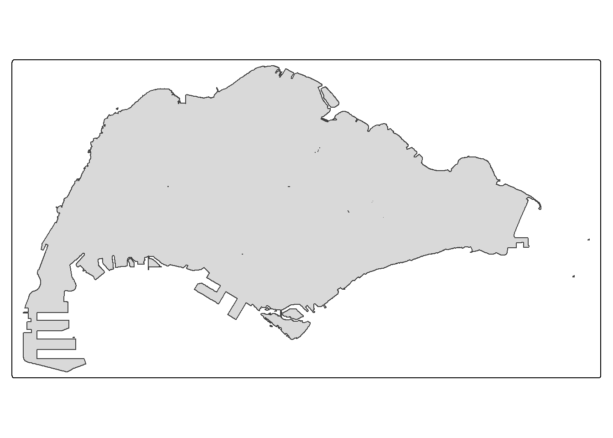
This dataset consists of aspatial data. The data was filtered for 4-room flats sold between July 2024 and September 2025, in line with the period of study for this exercise. This data will be geocoded in the next data processing step.
HDBresale <- read_csv("data/hdb/HDBresale.csv") %>%
filter(flat_type=="4 ROOM") %>%
filter(month >= "2024-07" & month <="2025-09")Rows: 218399 Columns: 11
── Column specification ────────────────────────────────────────────────────────
Delimiter: ","
chr (8): month, town, flat_type, block, street_name, storey_range, flat_mode...
dbl (3): floor_area_sqm, lease_commence_date, resale_price
ℹ Use `spec()` to retrieve the full column specification for this data.
ℹ Specify the column types or set `show_col_types = FALSE` to quiet this message.busstop <- st_read("data/transport/bus/BusStop.shp") %>%
st_transform(crs=3414)Reading layer `BusStop' from data source
`C:\clyerica\ISSS626-GAA\Take-home_Ex\Take-home_Ex03\data\transport\bus\BusStop.shp'
using driver `ESRI Shapefile'
Simple feature collection with 5172 features and 2 fields
Geometry type: POINT
Dimension: XY
Bounding box: xmin: 3970.122 ymin: 26482.1 xmax: 48285.52 ymax: 52983.82
Projected CRS: SVY21There are some bus stops which fall outside the borders of Singapore’s main island. The following code chunk uses st_join to join both sf objects by st_within, which will extract point features of only bus stops in Singapore. By using busstop as the first argument, we preserve the point layer (instead of the geometry column from mpsz).
busstop <- st_join(
busstop, mpsz_sf,
join=st_within, #returns TRUE for BusStop locations within the geometry of mpsz_sf
left=FALSE #remove rows without matches
) %>%
select(c("BUS_STOP_N", "geometry"))tmap_mode('plot')ℹ tmap mode set to "plot".qtm(mpsz)+
qtm(busstop, size = 0.5, fill='steelblue', add=TRUE)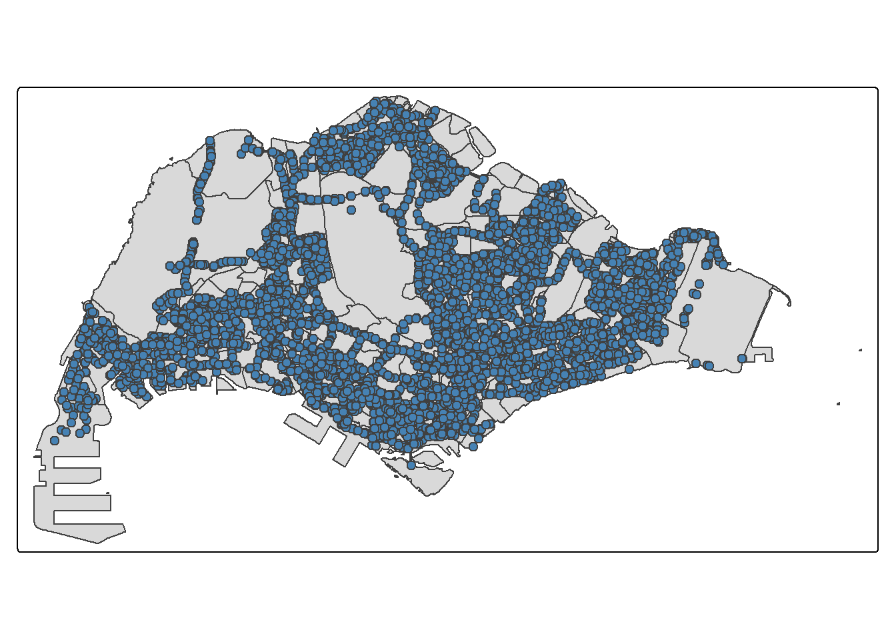
mrt <- st_read('data/transport/LTAMRTStationExitKML.kml') %>%
st_transform(crs=3414) %>%
st_zm(drop = TRUE, what = "ZM") %>%
select(1,'geometry')Reading layer `MRT_EXITS' from data source
`C:\clyerica\ISSS626-GAA\Take-home_Ex\Take-home_Ex03\data\transport\LTAMRTStationExitKML.kml'
using driver `KML'
Simple feature collection with 563 features and 2 fields
Geometry type: POINT
Dimension: XYZ
Bounding box: xmin: 103.6368 ymin: 1.264972 xmax: 103.9893 ymax: 1.449157
z_range: zmin: 0 zmax: 0
Geodetic CRS: WGS 84qtm(mpsz)+
qtm(mrt, size = 0.5, fill='steelblue', add=TRUE)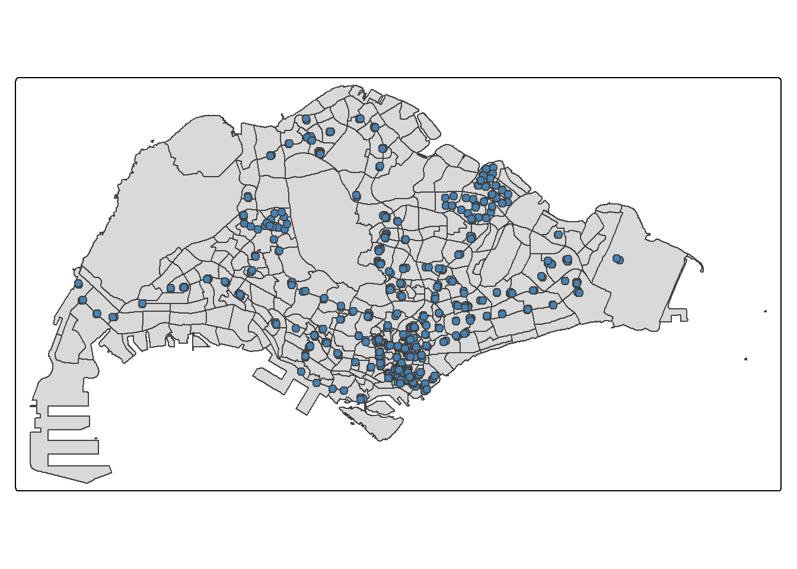
cycling <- st_read('data/transport/CyclingPathNetworkKML.kml') %>%
st_transform(crs=3414) %>%
select(1,'geometry')Reading layer `CYCLINGPATH' from data source
`C:\clyerica\ISSS626-GAA\Take-home_Ex\Take-home_Ex03\data\transport\CyclingPathNetworkKML.kml'
using driver `KML'
Simple feature collection with 4265 features and 2 fields
Geometry type: MULTILINESTRING
Dimension: XY
Bounding box: xmin: 103.6882 ymin: 1.272643 xmax: 103.9663 ymax: 1.458944
Geodetic CRS: WGS 84qtm(mpsz)+
qtm(cycling, col='red', add=TRUE)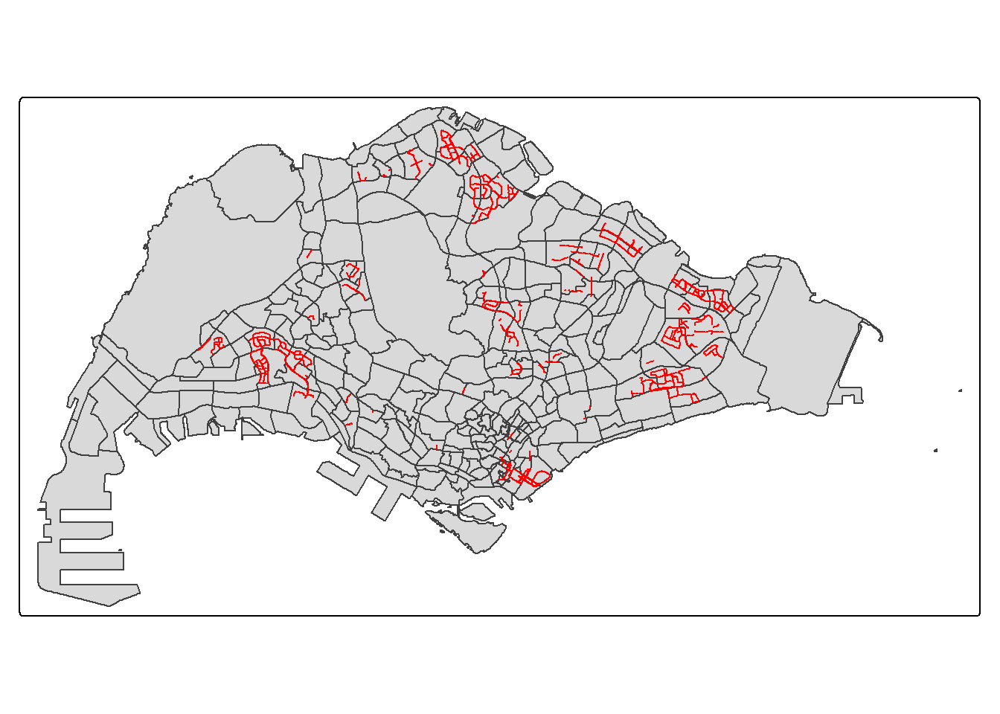
taxi <- st_read('data/transport/LTATaxiStopKML.kml') %>%
st_transform(crs=3414) %>%
st_zm(drop = TRUE, what = "ZM") %>%
select(1,'geometry')Reading layer `TAXISTOP' from data source
`C:\clyerica\ISSS626-GAA\Take-home_Ex\Take-home_Ex03\data\transport\LTATaxiStopKML.kml'
using driver `KML'
Simple feature collection with 366 features and 2 fields
Geometry type: POINT
Dimension: XYZ
Bounding box: xmin: 103.637 ymin: 1.26463 xmax: 103.9903 ymax: 1.458947
z_range: zmin: 0 zmax: 0
Geodetic CRS: WGS 84qtm(mpsz)+
qtm(taxi, size = 0.5, fill='steelblue', add=TRUE)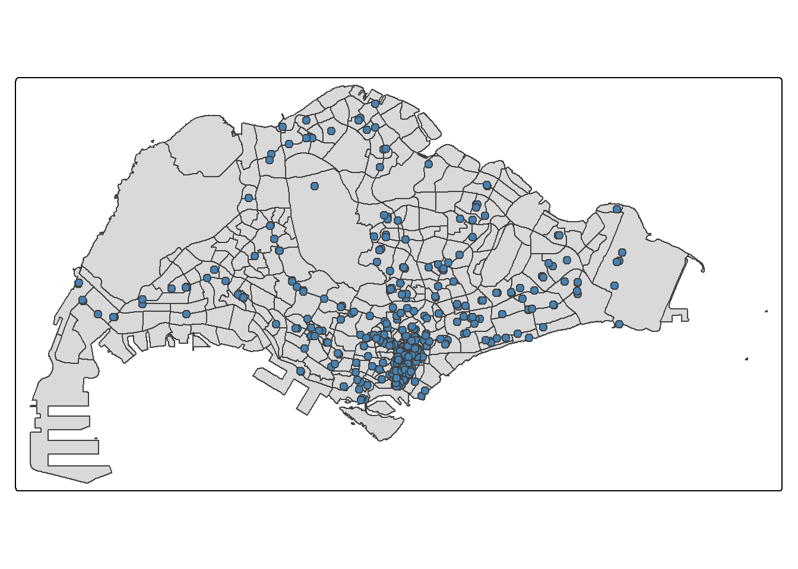
preschool <- st_read("data/family-facility/PreSchoolsLocation.kml")%>%
st_transform(crs=3414) %>%
st_zm(drop = TRUE, what = "ZM") %>%
select(1,'geometry')Reading layer `PRESCHOOLS_LOCATION' from data source
`C:\clyerica\ISSS626-GAA\Take-home_Ex\Take-home_Ex03\data\family-facility\PreSchoolsLocation.kml'
using driver `KML'
Simple feature collection with 2290 features and 2 fields
Geometry type: POINT
Dimension: XYZ
Bounding box: xmin: 103.6878 ymin: 1.247759 xmax: 103.9897 ymax: 1.462134
z_range: zmin: 0 zmax: 0
Geodetic CRS: WGS 84qtm(mpsz)+
qtm(preschool, size = 0.5, fill='steelblue', add=TRUE)kindergartens <- st_read("data/family-facility/Kindergartens.kml") %>%
st_transform(crs=3414) %>%
st_zm(drop = TRUE, what = "ZM") %>%
select(1,'geometry')Reading layer `KINDERGARTENS' from data source
`C:\clyerica\ISSS626-GAA\Take-home_Ex\Take-home_Ex03\data\family-facility\Kindergartens.kml'
using driver `KML'
Simple feature collection with 448 features and 2 fields
Geometry type: POINT
Dimension: XYZ
Bounding box: xmin: 103.6887 ymin: 1.247759 xmax: 103.9717 ymax: 1.455452
z_range: zmin: 0 zmax: 0
Geodetic CRS: WGS 84qtm(mpsz)+
qtm(kindergartens, size = 0.5, fill='steelblue', add=TRUE)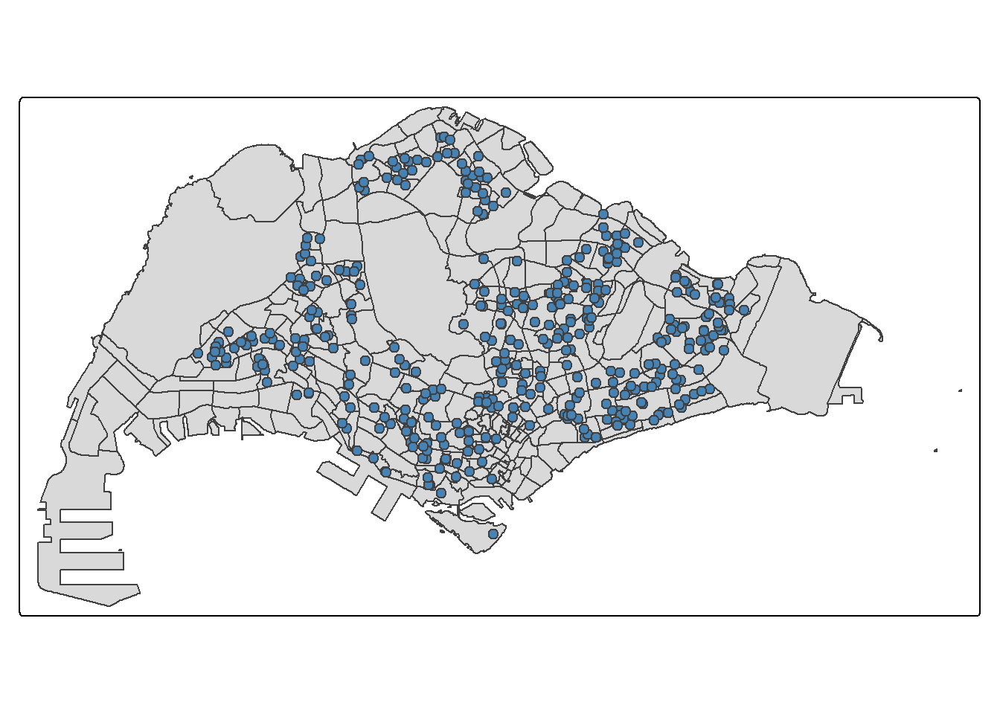
childcare <- st_read("data/family-facility/ChildCareServices.kml") %>%
st_transform(crs=3414) %>%
st_zm(drop = TRUE, what = "ZM") %>%
select(1,'geometry')Reading layer `CHILDCARE' from data source
`C:\clyerica\ISSS626-GAA\Take-home_Ex\Take-home_Ex03\data\family-facility\ChildCareServices.kml'
using driver `KML'
Simple feature collection with 1925 features and 2 fields
Geometry type: POINT
Dimension: XYZ
Bounding box: xmin: 103.6878 ymin: 1.247759 xmax: 103.9897 ymax: 1.462134
z_range: zmin: 0 zmax: 0
Geodetic CRS: WGS 84qtm(mpsz)+
qtm(childcare, size = 0.5, fill='steelblue', add=TRUE)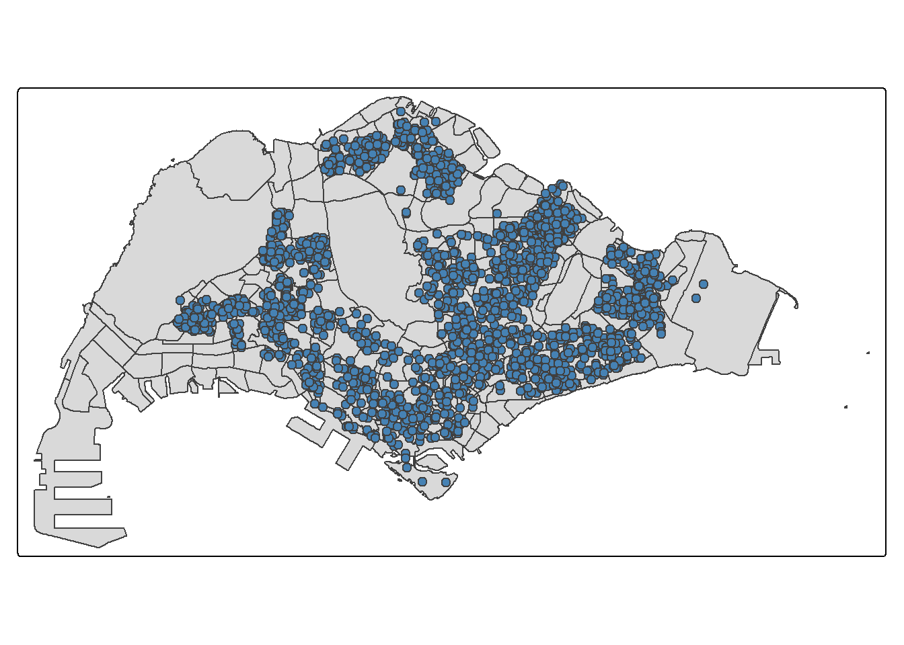
Aside from reading in the data for primary schools, the following code chunk also filters the data to exclude non-primary schools from the dataset, such as secondary schools or high schools. The names were filtered by looking up each name online to confirm which were not primary schools.
This data will be geocoded in the next data processing step.
prischool <- read_csv('data/family-facility/Generalinformationofschools.csv')Rows: 337 Columns: 31
── Column specification ────────────────────────────────────────────────────────
Delimiter: ","
chr (30): school_name, url_address, address, telephone_no, telephone_no_2, f...
dbl (1): postal_code
ℹ Use `spec()` to retrieve the full column specification for this data.
ℹ Specify the column types or set `show_col_types = FALSE` to quiet this message.prischool <- prischool %>%
filter(!str_detect(school_name, "SECONDARY", negate = FALSE),
(!str_detect(school_name, "JUNIOR COLLEGE", negate = FALSE)),
!school_name %in% c('ANGLO-CHINESE SCHOOL (BARKER ROAD)', 'ANGLO-CHINESE SCHOOL (INDEPENDENT)', 'ASSUMPTION ENGLISH SCHOOL', 'ASSUMPTION PATHWAY SCHOOL', 'CHIJ KATONG CONVENT', "CHIJ ST. JOSEPH'S CONVENT", "CHIJ ST. THERESA'S CONVENT", "CRESCENT GIRLS' SCHOOL", "GAN ENG SENG SCHOOL", "HAI SING CATHOLIC SCHOOL", "HWA CHONG INSTITUTION", "MILLENNIA INSTITUTE", "NORTHLIGHT SCHOOL", "RAFFLES INSTITUTION", "SCHOOL OF SCIENCE AND TECHNOLOGY, SINGAPORE", "SCHOOL OF THE ARTS, SINGAPORE", "SINGAPORE CHINESE GIRLS' SCHOOL", "SINGAPORE SPORTS SCHOOL", "ST ANDREW'S SCHOOL (JUNIOR)", "ST. JOSEPH'S INSTITUTION", "ST. PATRICK'S SCHOOL", "TANJONG KATONG GIRLS' SCHOOL","VICTORIA SCHOOL", "BUKIT PANJANG GOVT. HIGH SCHOOL", "CHUNG CHENG HIGH SCHOOL (MAIN)", "CHUNG CHENG HIGH SCHOOL (YISHUN)", "DUNMAN HIGH SCHOOL", "HOLY INNOCENTS' HIGH SCHOOL", "NAN CHIAU HIGH SCHOOL", "NAN HUA HIGH SCHOOL", "NANYANG GIRLS' HIGH SCHOOL", "NUS HIGH SCHOOL OF MATHEMATICS AND SCIENCE", "PRESBYTERIAN HIGH SCHOOL", "RIVER VALLEY HIGH SCHOOL", "ANGLICAN HIGH SCHOOL")) %>%
select(1,3)studentcare <- st_read("data/family-facility/StudentCareServicesKML.kml") %>%
st_transform(crs=3414) %>%
st_zm(drop = TRUE, what = "ZM") %>%
select(1,'geometry')Reading layer `STUDENTCARE' from data source
`C:\clyerica\ISSS626-GAA\Take-home_Ex\Take-home_Ex03\data\family-facility\StudentCareServicesKML.kml'
using driver `KML'
Simple feature collection with 386 features and 2 fields
Geometry type: POINT
Dimension: XYZ
Bounding box: xmin: 103.6876 ymin: 1.27474 xmax: 103.963 ymax: 1.456667
z_range: zmin: 0 zmax: 0
Geodetic CRS: WGS 84qtm(mpsz)+
qtm(studentcare, size = 0.5, fill='steelblue', add=TRUE)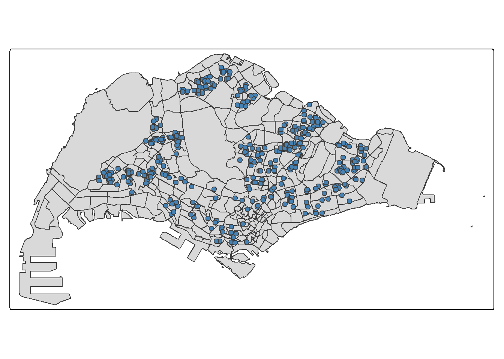
eldercare <- st_read('data/family-facility/EldercareServicesKML.kml') %>%
st_transform(crs=3414) %>%
st_zm(drop = TRUE, what = "ZM") %>%
select(1,'geometry')Reading layer `ELDERCARE' from data source
`C:\clyerica\ISSS626-GAA\Take-home_Ex\Take-home_Ex03\data\family-facility\EldercareServicesKML.kml'
using driver `KML'
Simple feature collection with 133 features and 2 fields
Geometry type: POINT
Dimension: XYZ
Bounding box: xmin: 103.7119 ymin: 1.271472 xmax: 103.9561 ymax: 1.439561
z_range: zmin: 0 zmax: 0
Geodetic CRS: WGS 84qtm(mpsz)+
qtm(eldercare, size = 0.5, fill='steelblue', add=TRUE)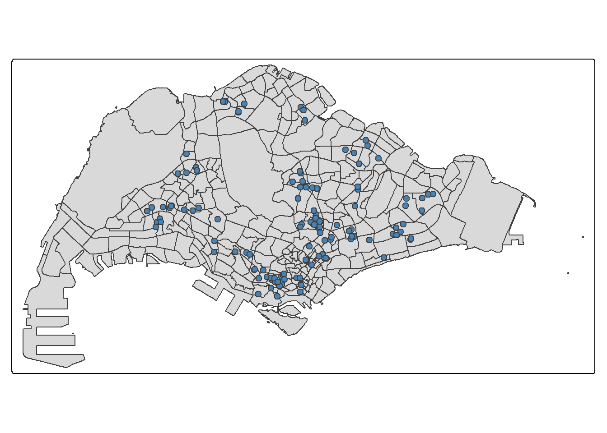
chas <- st_read('data/facilities/CHASClinics.kml') %>%
st_transform(crs=3414) %>%
st_zm(drop = TRUE, what = "ZM") %>%
select(1,'geometry')Reading layer `MOH_CHAS_CLINICS' from data source
`C:\clyerica\ISSS626-GAA\Take-home_Ex\Take-home_Ex03\data\facilities\CHASClinics.kml'
using driver `KML'
Simple feature collection with 1193 features and 2 fields
Geometry type: POINT
Dimension: XYZ
Bounding box: xmin: 103.5818 ymin: 1.016264 xmax: 103.9903 ymax: 1.456037
z_range: zmin: 0 zmax: 0
Geodetic CRS: WGS 84qtm(mpsz)+
qtm(chas, size = 0.5, fill='steelblue', add=TRUE)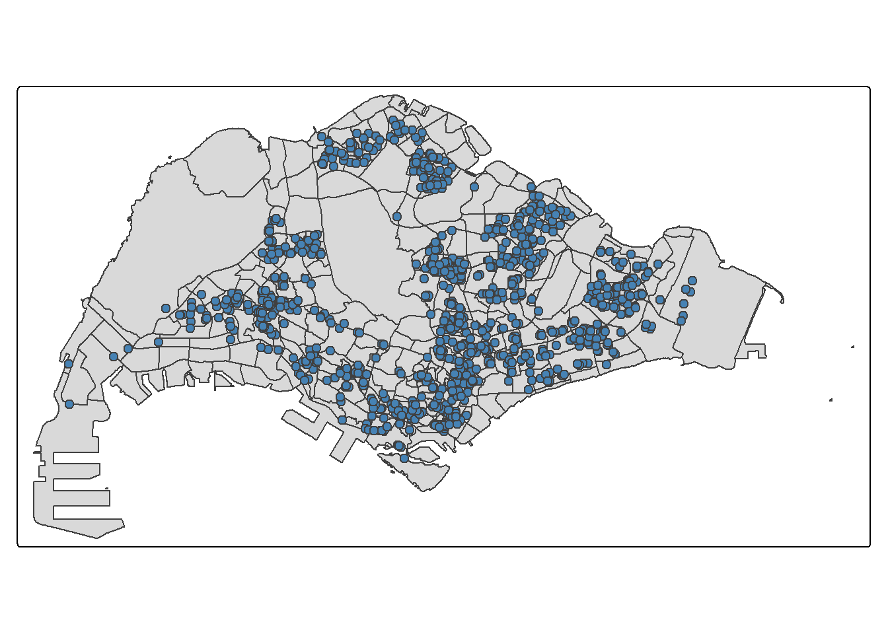
food <- st_read("data/facilities/EatingEstablishments.kml") %>%
st_transform(crs=3414)%>%
st_zm(drop = TRUE, what = "ZM") %>%
select(1,'geometry')Reading layer `EATING_ESTABLISHMENTS' from data source
`C:\clyerica\ISSS626-GAA\Take-home_Ex\Take-home_Ex03\data\facilities\EatingEstablishments.kml'
using driver `KML'
Simple feature collection with 34378 features and 2 fields
Geometry type: POINT
Dimension: XYZ
Bounding box: xmin: 103.6113 ymin: 1.234038 xmax: 104.0222 ymax: 1.469795
z_range: zmin: 0 zmax: 0
Geodetic CRS: WGS 84There are some esting establishments which fall outside the borders of Singapore’s main island. The following code chunk uses st_join to join both sf objects by st_within, which will extract point features of establishments within Singapore’s main island.
food <- st_join(
food, mpsz_sf,
join=st_within,
left=FALSE
) %>%
select(c("Name", "geometry"))qtm(mpsz)+
qtm(food, size = 0.5, fill='steelblue', add=TRUE)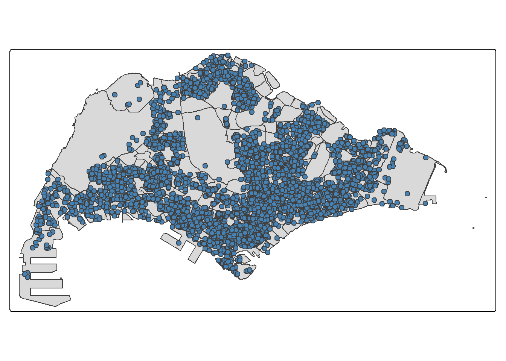
hawker <- st_read('data/facilities/HawkerCentresKML.kml') %>%
st_transform(crs=3414)%>%
st_zm(drop = TRUE, what = "ZM") %>%
select(1,'geometry')Reading layer `HAWKERCENTRE' from data source
`C:\clyerica\ISSS626-GAA\Take-home_Ex\Take-home_Ex03\data\facilities\HawkerCentresKML.kml'
using driver `KML'
Simple feature collection with 125 features and 2 fields
Geometry type: POINT
Dimension: XYZ
Bounding box: xmin: 103.6974 ymin: 1.272716 xmax: 103.9882 ymax: 1.449017
z_range: zmin: 0 zmax: 0
Geodetic CRS: WGS 84qtm(mpsz)+
qtm(hawker, size = 0.5, fill='steelblue', add=TRUE)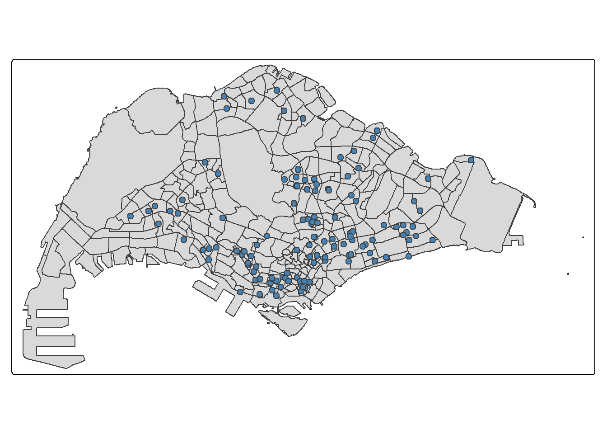
hospitals <- read_csv('data/facilities/hospitals_with_coordinates.csv') %>%
select(1,'latitude', 'longitude')Rows: 24 Columns: 7
── Column specification ────────────────────────────────────────────────────────
Delimiter: ","
chr (4): hospital_name, address, hospital_type, town
dbl (3): postal_code, latitude, longitude
ℹ Use `spec()` to retrieve the full column specification for this data.
ℹ Specify the column types or set `show_col_types = FALSE` to quiet this message.hospitals_sf <- st_as_sf(hospitals,
coords = c("longitude", "latitude"),
crs = 4326) %>%
st_transform(crs=3414)qtm(mpsz)+
qtm(hospitals_sf, size = 0.5, fill='steelblue', add=TRUE)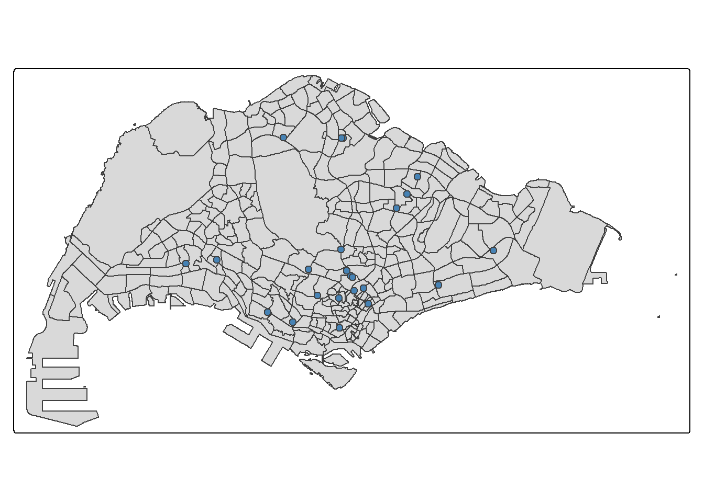
library <- st_read('data/facilities/Libraries.kml') %>%
st_transform(crs=3414)%>%
st_zm(drop = TRUE, what = "ZM") %>%
select(1,'geometry')Reading layer `LIBRARIES' from data source
`C:\clyerica\ISSS626-GAA\Take-home_Ex\Take-home_Ex03\data\facilities\Libraries.kml'
using driver `KML'
Simple feature collection with 27 features and 2 fields
Geometry type: POINT
Dimension: XYZ
Bounding box: xmin: 103.7045 ymin: 1.263922 xmax: 103.9494 ymax: 1.448197
z_range: zmin: 0 zmax: 0
Geodetic CRS: WGS 84qtm(mpsz)+
qtm(library, size = 0.5, fill='steelblue', add=TRUE)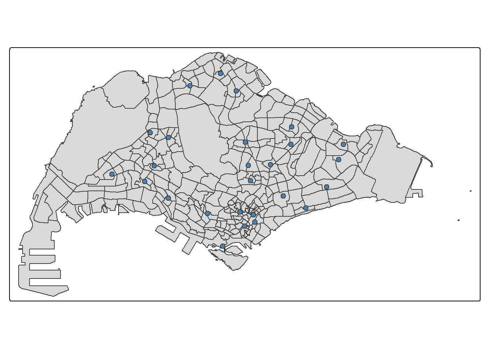
market <- st_read('data/facilities/NEAMarketandFoodCentreKML.kml') %>%
st_transform(crs=3414)%>%
st_zm(drop = TRUE, what = "ZM") %>%
select(1,'geometry')Reading layer `MARKET_FOOD_CENTRE' from data source
`C:\clyerica\ISSS626-GAA\Take-home_Ex\Take-home_Ex03\data\facilities\NEAMarketandFoodCentreKML.kml'
using driver `KML'
Simple feature collection with 110 features and 2 fields
Geometry type: POINT
Dimension: XYZ
Bounding box: xmin: 103.7105 ymin: 1.272589 xmax: 103.9882 ymax: 1.443405
z_range: zmin: 0 zmax: 0
Geodetic CRS: WGS 84qtm(mpsz)+
qtm(market, size = 0.5, fill='steelblue', add=TRUE)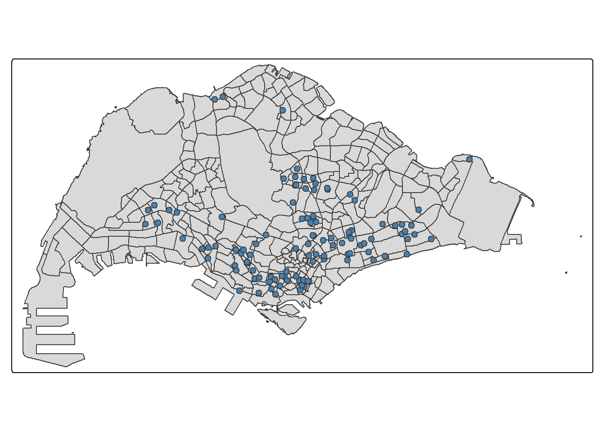
parks <- st_read('data/facilities/Parks.geojson') %>%
st_transform(crs=3414) %>%
select(1,'geometry')Reading layer `NPARKS_PARKS' from data source
`C:\clyerica\ISSS626-GAA\Take-home_Ex\Take-home_Ex03\data\facilities\Parks.geojson'
using driver `GeoJSON'
Simple feature collection with 450 features and 8 fields
Geometry type: MULTIPOLYGON
Dimension: XY
Bounding box: xmin: 103.6925 ymin: 1.262299 xmax: 104.0544 ymax: 1.46419
Geodetic CRS: WGS 84There are some parks which fall outside the borders of Singapore’s main island (for example, on Pulau Ubin or Pulau Sekudu). The following code chunk uses st_join to join both sf objects by st_within, which will extract only parks within Singapore’s main island.
parks <- st_join(
parks, mpsz_sf,
join=st_within,
left=FALSE
) %>%
select(c("OBJECTID_1", "geometry"))qtm(mpsz)+
qtm(parks, fill='steelblue', add=TRUE)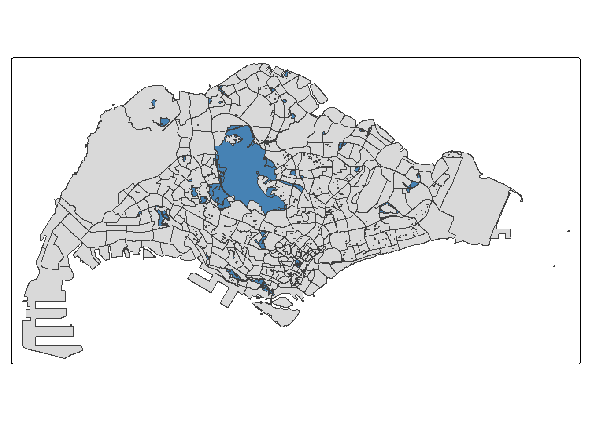
pharmacy <- st_read('data/facilities/RetailpharmacylocationsKML.KML') %>%
st_transform(crs=3414) %>%
st_zm(drop = TRUE, what = "ZM") %>%
select(1,'geometry')Reading layer `REGISTERED_PHARMACY' from data source
`C:\clyerica\ISSS626-GAA\Take-home_Ex\Take-home_Ex03\data\facilities\RetailpharmacylocationsKML.kml'
using driver `KML'
Simple feature collection with 269 features and 2 fields
Geometry type: POINT
Dimension: XYZ
Bounding box: xmin: 103.699 ymin: 1.2563 xmax: 104.0025 ymax: 1.448227
z_range: zmin: 0 zmax: 0
Geodetic CRS: WGS 84qtm(mpsz)+
qtm(pharmacy, size = 0.5, fill='steelblue', add=TRUE)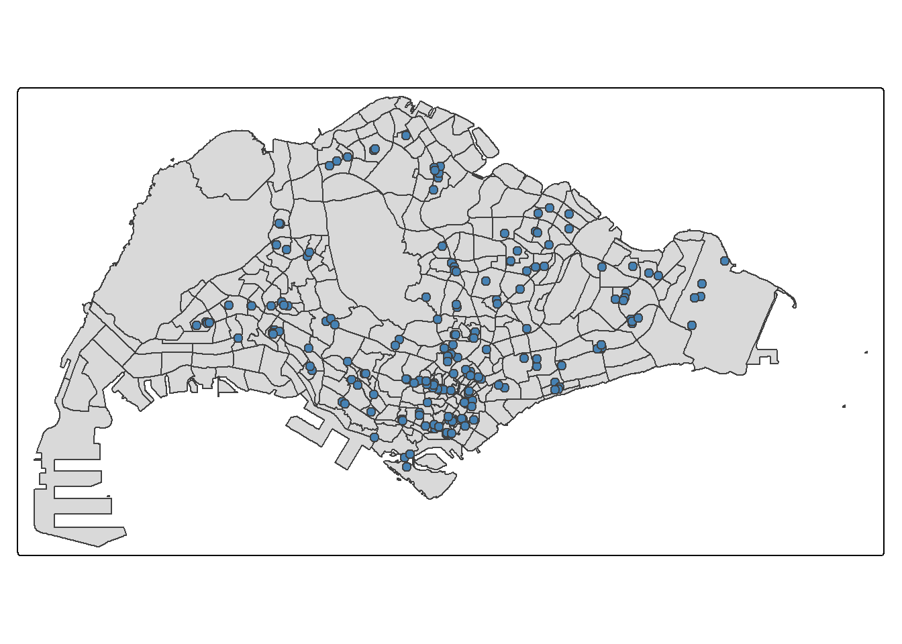
malls <- read_csv('data/facilities/singapore_malls_pois.csv') %>%
select(1,'lon', 'lat')Rows: 249 Columns: 8
── Column specification ────────────────────────────────────────────────────────
Delimiter: ","
chr (5): name, category, address, website, phone
dbl (2): lat, lon
lgl (1): brand
ℹ Use `spec()` to retrieve the full column specification for this data.
ℹ Specify the column types or set `show_col_types = FALSE` to quiet this message.malls_sf <- st_as_sf(malls,
coords = c("lon", "lat"),
crs = 4326) %>%
st_transform(crs=3414)qtm(mpsz)+
qtm(malls_sf, size = 0.5, fill='steelblue', add=TRUE)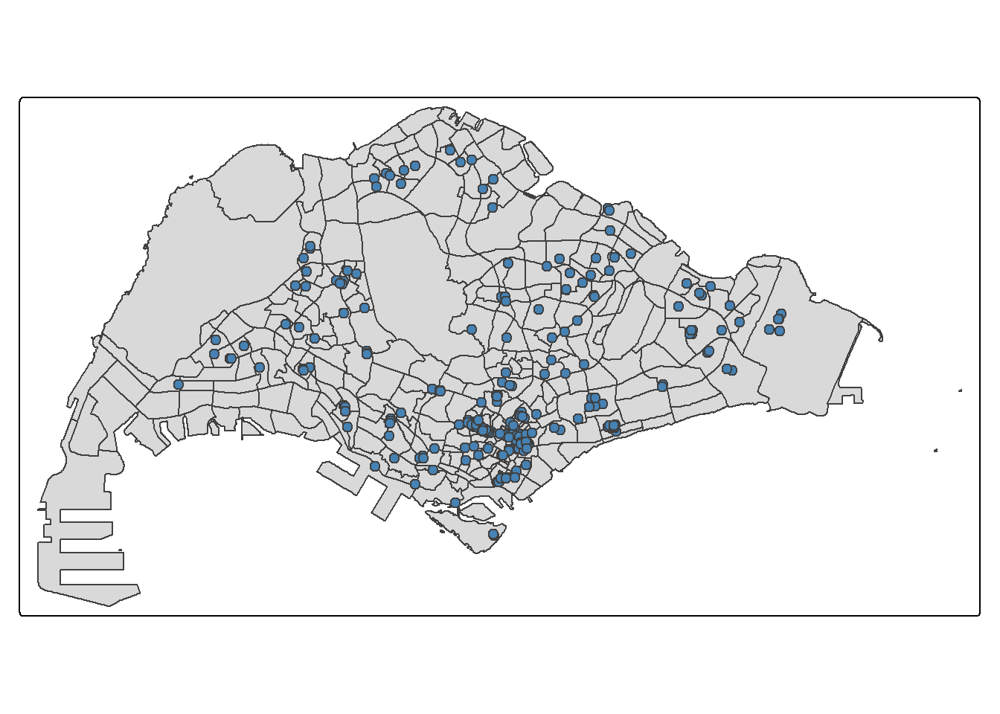
supermarket <- st_read('data/facilities/SupermarketsKML.KML') %>%
st_transform(crs=3414) %>%
st_zm(drop = TRUE, what = "ZM") %>%
select(1,'geometry')Reading layer `SUPERMARKETS' from data source
`C:\clyerica\ISSS626-GAA\Take-home_Ex\Take-home_Ex03\data\facilities\SupermarketsKML.kml'
using driver `KML'
Simple feature collection with 526 features and 2 fields
Geometry type: POINT
Dimension: XYZ
Bounding box: xmin: 103.6258 ymin: 1.24715 xmax: 104.0036 ymax: 1.461526
z_range: zmin: 0 zmax: 0
Geodetic CRS: WGS 84qtm(mpsz)+
qtm(supermarket, size = 0.5, fill='steelblue', add=TRUE)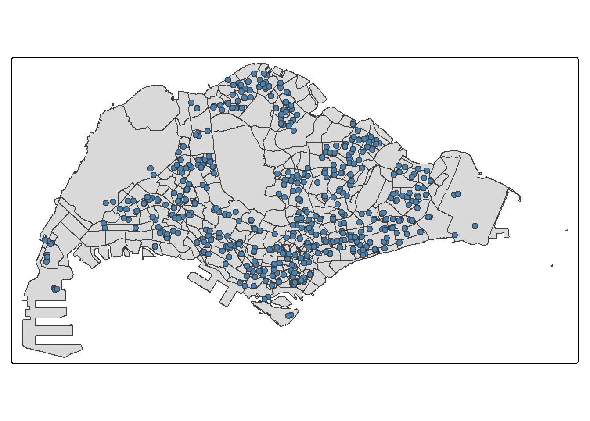
nrp <- st_read('data/hdb/NRPKML.kml') %>%
st_transform(crs=3414) %>%
select(1,'geometry')Reading layer `HDBNRPUNDERCONSTRUCTION' from data source
`C:\clyerica\ISSS626-GAA\Take-home_Ex\Take-home_Ex03\data\hdb\NRPKML.kml'
using driver `KML'
Simple feature collection with 35 features and 2 fields
Geometry type: MULTIPOLYGON
Dimension: XY
Bounding box: xmin: 103.6928 ymin: 1.282851 xmax: 103.9557 ymax: 1.445789
Geodetic CRS: WGS 84qtm(mpsz)+
qtm(nrp, fill='steelblue', add=TRUE)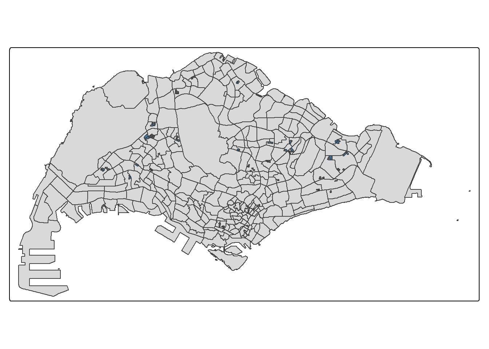
Geocoding data
The following code chunk creates the function geocode(). The function takes in two string values and concatenates them to form an address which it then uses to query the OneMap API to retrieve latitude and longitude coordinates for that address.
geocode <- function(block, streetname) {
base_url="https://onemap.gov.sg/api/common/elastic/search"
address<- paste(block, streetname, sep=" ")
query <- list("searchVal" = address,
"returnGeom" = "Y",
"getAddrDetails" = "N",
"pageNum" = "1")
res <- GET(base_url, query = query)
restext <- content(res, as="text")
output <- fromJSON(restext) %>%
as.data.frame() %>%
select(results.LATITUDE, results.LONGITUDE)
return(output)
}THe following section geocodes the HDBresale and prischool datasets to include latitude and longitude columns for each entry in each respective dataset using the function geocode. The newly created latitude and longitude columns are then used to convert the dataframes to sf dataframes using st_as_sf(), and converts the coordinates to SVY21 projection using st_transform() for consistency with the other datasets. Finally, the dataset is visualised using qtm() to check that the datapoints all fall within Singapore’s main island for our analysis purposes.
The following code chunk amends ‘ST.’ in any strings under street_name of HDBresale to ‘SAINT’ to ensure it is not accidentally read as an abbreviation for ‘street’
HDBresale$street_name<-gsub(
"ST\\.", "SAINT",
HDBresale$street_name
)HDBresale$LATITUDE <- 0
HDBresale$LONGITUDE <- 0
for (i in 1:nrow(HDBresale)){
temp_output <- geocode(HDBresale[i,4], HDBresale[i,5])
HDBresale$LATITUDE[i] <- temp_output$results.LATITUDE
HDBresale$LONGITUDE[i] <- temp_output$results.LONGITUDE
}write_rds(HDBresale, "data/rds/HDBresale.rds")HDBresale<-read_rds('data/rds/HDBresale.rds')
HDBresale_sf <- st_as_sf(HDBresale,
coords = c("LONGITUDE", "LATITUDE"),
crs = 4326) %>%
st_transform(crs=3414)qtm(mpsz)+
qtm(HDBresale_sf, size = 0.5, fill='steelblue', add=TRUE)
prischool$LATITUDE <- 0
prischool$LONGITUDE <- 0
for (i in 1:nrow(prischool)){
temp_output <- geocode(prischool[i,3],'')
prischool$LATITUDE[i] <- temp_output$results.LATITUDE
prischool$LONGITUDE[i] <- temp_output$results.LONGITUDE
}write_rds(prischool, 'data/rds/prischool.rds')prischool<-read_rds('data/rds/prischool.rds')
prischool_sf <- st_as_sf(prischool,
coords = c("LONGITUDE", "LATITUDE"),
crs = 4326) %>%
st_transform(crs=3414)qtm(mpsz)+
qtm(prischool_sf, size = 0.5, fill='steelblue', add=TRUE)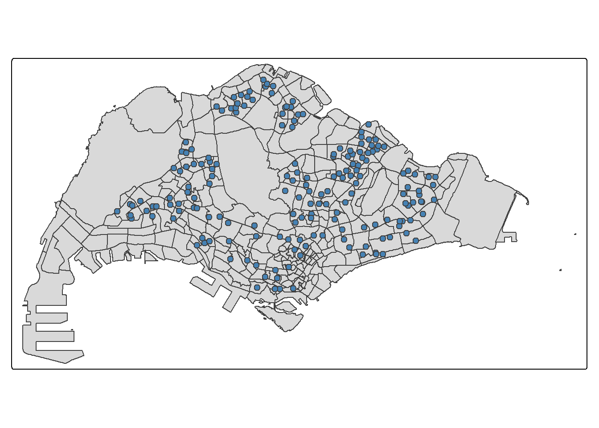
Preparing attribute data
In this section, we will perform feature engineering for each HDB resale datapoint. We will create structural attributes (factors attributable to the HDB flat itself), and locational attributes (factors dependent on proximity to certain amenities/facilities or on the availability of amenities/facilities within a certain distance, i.e., accessibility to that amenity/facility)
- structural attributes: the code to derive each are explained in its respective tab
- proximity attributes: derived using
st_nearest feature(x,y)of sf package, which finds the nearest spatial feature inyfor each feature inx, andst_distance(x,y, by_element=TRUE)which calculates the distance between each corresponding row ofxandy. As the distance is returned in metres, the value is divided by 1000 to return the from the resold flatdistance to the nearest facility/amenity in kilometres. Refer to the figure below for how the shortest distance is calculated between different types of features. - accessibility attributes: derived using
st_is_within_distance(x,y,dist)which returns a list of features fromxwhich a part of falls within a specified maximum distancedist(in metres) of a feature iny.map_int()from purr package from tidyverse is then used to applylength()to each list and count the number of features which falls within the specified distance of the resold flat.
HDBresale_sf <- HDBresale_sf %>%
mutate(
end_date = ymd(paste0(month, "-01")),
month_order = interval('2024-07-01', end_date) %/% months(1)
)storey_mapping <- c("01 TO 03" = 1, "04 TO 06" = 2, "07 TO 09" = 3,
"10 TO 12" = 4, "13 TO 15" = 5, "16 TO 18" = 6,
"19 TO 21" = 7, "22 TO 24" = 8, "25 TO 27" = 9,
"28 TO 30" = 10, "31 TO 33" = 11, "34 TO 36" = 12,
"37 TO 39" = 13, "40 TO 42" = 14, "43 TO 45" = 15,
"46 TO 48" = 16, "49 TO 51" = 17)
HDBresale_sf$storey_order <- storey_mapping[HDBresale_sf$storey_range]HDBresale_sf <- HDBresale_sf %>%
mutate(
years = as.numeric(str_extract(remaining_lease, "^\\d+")),
months = as.numeric(str_extract(remaining_lease, "\\d+(?=\\s+month)")) %>%
replace_na(0),
remaining_lease_months = (years * 12) + months
) %>%
select(-c(years, months))bs_within_350m <- st_is_within_distance(
HDBresale_sf, busstop_sf, dist=350) #measurement is in meters
HDBresale_sf <- HDBresale_sf %>%
mutate(bus_within350m = map_int(bs_within_350m, length))HDBresale_sf <- HDBresale_sf %>%
mutate(
prox_mrt = as.numeric(
st_distance(geometry,
mrt[st_nearest_feature(
geometry, mrt), ],
by_element = TRUE)
)/1000
)HDBresale_sf <- HDBresale_sf %>%
mutate(
prox_cycling = as.numeric(
st_distance(geometry,
cycling[st_nearest_feature(
geometry, cycling), ],
by_element = TRUE)
)/1000
)HDBresale_sf <- HDBresale_sf %>%
mutate(
prox_taxi = as.numeric(
st_distance(geometry,
taxi[st_nearest_feature(
geometry, taxi), ],
by_element = TRUE)
)/1000
)within_350m <- st_is_within_distance(
HDBresale_sf, preschool, dist=350)
HDBresale_sf <- HDBresale_sf %>%
mutate(preschool_within350m = map_int(within_350m, length))k_within_350m <- st_is_within_distance(
HDBresale_sf, kindergartens, dist=350) #measurement is in meters
HDBresale_sf <- HDBresale_sf %>%
mutate(kindergarten_within350m = map_int(k_within_350m, length))c_within_350m <- st_is_within_distance(
HDBresale_sf, childcare, dist=350) #measurement is in meters
HDBresale_sf <- HDBresale_sf %>%
mutate(childcare_within350m = map_int(c_within_350m, length))p_within_1km <- st_is_within_distance(
HDBresale_sf, prischool_sf, dist=1000) #measurement is in meters
HDBresale_sf <- HDBresale_sf %>%
mutate(prischool_within1km = map_int(p_within_1km, length))GPS <- c("METHODIST GIRLS' SCHOOL (PRIMARY)", "TAO NAN SCHOOL", "AI TONG SCHOOL", "HOLY INNOCENTS' PRIMARY SCHOOL", "CHIJ ST. NICHOLAS GIRLS' SCHOOL", "ADMIRALTY PRIMARY SCHOOL", "ST. JOSEPH'S INSTITUTION JUNIOR", "CATHOLIC HIGH SCHOOL", "ANGLO-CHINESE SCHOOL (JUNIOR)", "CHONGFU SCHOOL", "KONG HWA SCHOOL", "ST. HILDA'S PRIMARY SCHOOL", "ANGLO-CHINESE SCHOOL (PRIMARY)", "NAN CHIAU PRIMARY SCHOOL", "NAN HUA PRIMARY SCHOOL", "NANYANG PRIMARY SCHOOL", "PEI HWA PRESBYTERIAN PRIMARY SCHOOL", "KUO CHUAN PRESBYTERIAN PRIMARY SCHOOL", "RULANG PRIMARY SCHOOL", "SINGAPORE CHINESE GIRLS' PRIMARY SCHOOL", "MARIS STELLA HIGH SCHOOL", "FAIRFIELD METHODIST SCHOOL (PRIMARY)", "SOUTH VIEW PRIMARY SCHOOL", "CHIJ PRIMARY (TOA PAYOH)", "HENRY PARK PRIMARY SCHOOL", "PEI CHUN PUBLIC SCHOOL", "XINMIN PRIMARY SCHOOL", "RED SWASTIKA SCHOOL", "ST. ANTHONY'S PRIMARY SCHOOL", "ROSYTH SCHOOL", "PAYA LEBAR METHODIST GIRLS' SCHOOL (PRIMARY)", "NORTHLAND PRIMARY SCHOOL", "PASIR RIS PRIMARY SCHOOL", "MEE TOH SCHOOL", "RADIN MAS PRIMARY SCHOOL", "CHIJ OUR LADY OF THE NATIVITY", "HORIZON PRIMARY SCHOOL","SENGKANG GREEN PRIMARY SCHOOL", "RAFFLES GIRLS' PRIMARY SCHOOL","MAHA BODHI SCHOOL", "ST. ANDREW'S JUNIOR SCHOOL", "KEMING PRIMARY SCHOOL","CHUA CHU KANG PRIMARY SCHOOL", "RIVER VALLEY PRIMARY SCHOOL","ANDERSON PRIMARY SCHOOL","GONGSHANG PRIMARY SCHOOL", "HONG WEN SCHOOL","BUKIT PANJANG PRIMARY SCHOOL", "ST. GABRIEL'S PRIMARY SCHOOL", "FRONTIER PRIMARY SCHOOL", "POI CHING SCHOOL", "CHIJ OUR LADY OF GOOD COUNSEL", "CANOSSA CATHOLIC PRIMARY SCHOOL", "HOUGANG PIRMARY SCHOOL", "WESTWOORD PRIMARY SCHOOL", "QIFA PRIMARY SCHOOL", "TEEMASEK PRIMARY SCHOOL","YU NENG PRIMARY SCHOOL", "ST. MARGARET'S SCHOOL (PRIMARY)", "TANJONG KATONG PRIMARY SCHOOL", "CANBERRA PRIMARY SCHOOL", "INNOVA PRIMARY SCHOOL", "WOODLANDS PRIMARY SCHOOL", "YANGZHENG PRIMARY SCHOOL", "MONTFORD JUNIOR SCHOOL", "RIVERVALE PRIMARY SCHOOL", "COMPASSVALE PRIMARY SCHOOL", "CHIJ (KATONG) PRIMARY", "ST. STEPHEN'S SCHOOL", "SHUQUN PRIMARY SCHOOL", "CHONGZHENG PRIMARY SCHOOL, CHIJ (KELLOCK)", "CHIJ OUR LADY QUEEN OF PEACE", "DE LA SALLE SCHOOL")
gps_sf <- prischool_sf %>%
filter(school_name %in% GPS)
HDBresale_sf <- HDBresale_sf %>%
mutate(
prox_gps = as.numeric(
st_distance(geometry,
gps_sf[st_nearest_feature(
geometry, gps_sf), ],
by_element = TRUE)
)/1000
)HDBresale_sf <- HDBresale_sf %>%
mutate(
prox_studentcare = as.numeric(
st_distance(geometry,
studentcare[st_nearest_feature(
geometry, studentcare), ],
by_element = TRUE)/1000 #divide by 1000 to get measurement in km
)
)HDBresale_sf <- HDBresale_sf %>%
mutate(
prox_eldercare = as.numeric(
st_distance(geometry,
eldercare[st_nearest_feature(
geometry, eldercare), ],
by_element = TRUE)
)/1000
)cbd <- mpsz %>%
filter(PLN_AREA_N=="DOWNTOWN CORE")%>%
st_union()
HDBresale_sf <- HDBresale_sf %>%
mutate(
prox_cbd = as.numeric(
st_distance(geometry,
cbd[st_nearest_feature(
geometry, cbd), ],
by_element = TRUE)
)/1000
)HDBresale_sf <- HDBresale_sf %>%
mutate(
prox_CHAS = as.numeric(
st_distance(geometry,
chas[st_nearest_feature(
geometry, chas), ],
by_element = TRUE)
)/1000
)f_within_350m <- st_is_within_distance(
HDBresale_sf, food, dist=350) #measurement is in meters
HDBresale_sf <- HDBresale_sf %>%
mutate(foodestablishments_within350m = map_int(f_within_350m, length))HDBresale_sf <- HDBresale_sf %>%
mutate(
prox_hawker = as.numeric(
st_distance(geometry,
hawker[st_nearest_feature(
geometry, hawker), ],
by_element = TRUE)
)/1000
)HDBresale_sf <- HDBresale_sf %>%
mutate(
prox_hospital = as.numeric(
st_distance(geometry,
hospitals_sf[st_nearest_feature(
geometry, hospitals_sf), ],
by_element = TRUE)
)/1000
)HDBresale_sf <- HDBresale_sf %>%
mutate(
prox_library = as.numeric(
st_distance(geometry,
library[st_nearest_feature(
geometry, library), ],
by_element = TRUE)
)/1000
)HDBresale_sf <- HDBresale_sf %>%
mutate(
prox_market = as.numeric(
st_distance(geometry,
market[st_nearest_feature(
geometry, market), ],
by_element = TRUE)
)/1000
)HDBresale_sf <- HDBresale_sf %>%
mutate(
prox_parks = as.numeric(
st_distance(geometry,
parks[st_nearest_feature(
geometry, parks), ],
by_element = TRUE)
)/1000
)HDBresale_sf <- HDBresale_sf %>%
mutate(
prox_pharmacy = as.numeric(
st_distance(geometry,
pharmacy[st_nearest_feature(
geometry, pharmacy), ],
by_element = TRUE)
)/1000
)HDBresale_sf <- HDBresale_sf %>%
mutate(
prox_mall = as.numeric(
st_distance(geometry,
malls_sf[st_nearest_feature(
geometry, malls_sf), ],
by_element = TRUE)
)/1000
)HDBresale_sf <- HDBresale_sf %>%
mutate(
prox_supermarket = as.numeric(
st_distance(geometry,
supermarket[st_nearest_feature(
geometry, supermarket), ],
by_element = TRUE)
)/1000
)nrp_sf <- nrp %>%
mutate(
address = map_chr(Description, extract_kml_field, "NAME"),
est_cmpltn = map_chr(Description, extract_kml_field, "ESTMT_CNSTRN_CMPLTN")
) %>%
select(-Name, -Description) %>%
mutate(
quarter_num = as.numeric(str_extract(est_cmpltn, "^\\d")),
year_num = str_extract(est_cmpltn, "\\d{4}$"),
end_month = case_when(
quarter_num == 1 ~ "03", # Q1 ends in March
quarter_num == 2 ~ "06", # Q2 ends in June
quarter_num == 3 ~ "09", # Q3 ends in September
quarter_num == 4 ~ "12", # Q4 ends in December
TRUE ~ NA_character_
),
cmpltn_date = paste0(year_num, "-", end_month)
) %>%
# Select the original column and the final date object
select(address, cmpltn_date, geometry)HDBresale_sf <- HDBresale_sf %>%
st_join(nrp_sf %>% select(cmpltn_date), left = TRUE) %>%
mutate(
nrp_completed = case_when(
!is.na(cmpltn_date) & (month > cmpltn_date) ~ 1,
TRUE ~ 0
)
) %>%
select(-cmpltn_date)Cleaning up table
The following code chunk cleans up the HDBresale_sf dataframe to only the attributes of interest for our analysis in this exercise. This makes the data more readable and is more storage efficient.
HDBresale_sf <- HDBresale_sf %>%
select(resale_price, floor_area_sqm, month_order, storey_order,
remaining_lease_months, prox_mrt, prox_cycling,
prox_taxi, prox_studentcare, prox_gps, prox_eldercare, prox_cbd,
prox_CHAS, prox_hawker,
prox_hospital, prox_library, prox_market, prox_parks,
prox_pharmacy, prox_mall, prox_supermarket,
bus_within350m, preschool_within350m,
kindergarten_within350m, childcare_within350m,
prischool_within1km, nrp_completed)
write_rds(HDBresale_sf, 'data/rds/HDBresale_sf.rds')HDBresale_sf <- read_rds('data/rds/HDBresale_sf.rds')Creating train/test data sets
We will train our predictive model using HDB resale transaction data from July 2024 to June 2025, to predict resale prices from July to September 2025. The following code chunk splits the dataset into training and test data sets,
GWmodel package struggles with overly large datasets. As HDBresale_sf
set.seed(1234)
HDB_train <- HDBresale_sf %>%
filter(month_order<=11) %>%
sample_n(3000)
HDB_test <- HDBresale_sf %>%
filter(month_order>11) %>%
sample_n(2000)
write_rds(HDB_train, 'data/rds/HDB_train.rds')
write_rds(HDB_test, 'data/rds/HDB_test.rds')HDB_train <- read_rds('data/rds/HDB_train.rds')
HDB_test <- read_rds('data/rds/HDB_test.rds')Removing overlapping points
when using GWmodel to calibrate explanatory or predictive models, it is important to ensure no overlapping point features
overlapping_points<- HDB_train %>%
mutate(overlap=lengths(st_equals(., .))>1)
sum(overlapping_points$overlap)[1] 1362The code chunk below uses st_jitter of sf package to move point features by 1m to avoid overlapping point features
HDB_train<-HDB_train %>%
st_jitter(amount=1)Now, we can check that there are no longer any overlapping points in our training data
overlapping_points<- HDB_train %>%
mutate(overlap=lengths(st_equals(., .))>1)
sum(overlapping_points$overlap)[1] 0Exploratory Data Analysis
HDBresale_region <- st_join(
x = HDB_test, # The layer you want to keep all attributes for
y = mpsz["REGION_N"], # The layer you want to get attributes from (only REGION_N)
join = st_within, # Specifies a 'points in polygon' join
left = TRUE # Ensures all original points are kept, even if they fall outside a polygon
)
tm_shape(mpsz) +
tm_polygons(col_alpha = 0.3)+
tm_facets(by = "REGION_N",
nrow = 2,
ncols = 3,
free.coords=TRUE,
drop.units=TRUE) +
tm_shape(HDBresale_region, group = "REGION_N")+
tm_dots(fill='resale_price',
fill.scale = tm_scale_intervals(style = "pretty"),
fill.legend = tm_legend(),
fill.chart = tm_chart_histogram())+
tm_facets(by = "REGION_N",
nrow = 2,
ncols = 3,
free.coords=TRUE,
drop.units=TRUE)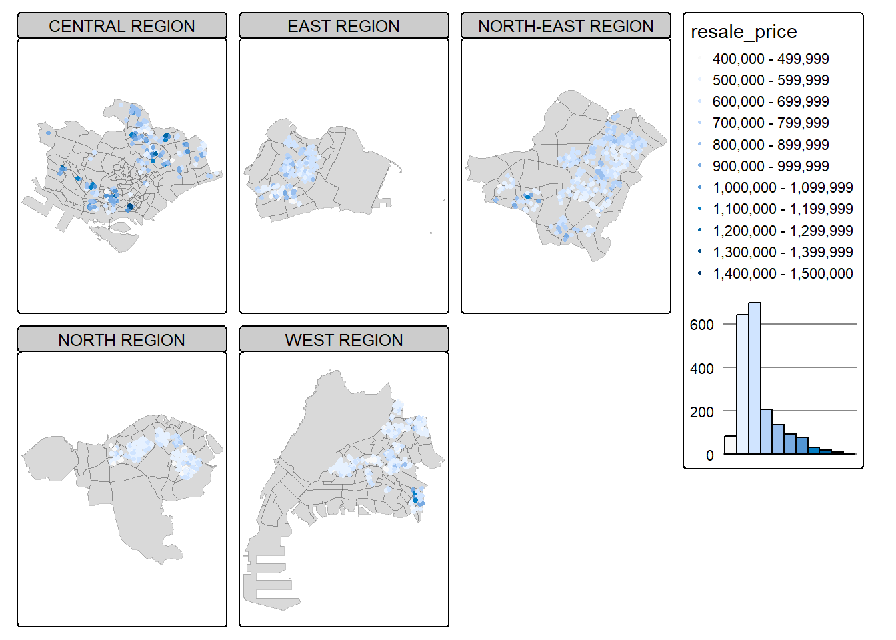
structural_factors <- c( "floor_area_sqm", "storey_order", "remaining_lease_months")
plots <- lapply(structural_factors, function(v) {
ggplot(HDB_train, aes_string(x = v)) +
geom_histogram(bins = 20, color = "black", fill = "lightblue") +
labs(title = v, x = NULL, y = NULL) +
theme_minimal() +
theme(
plot.title = element_text(size = 9, hjust = 0.5),
axis.text = element_text(size = 6)
)
})Warning: `aes_string()` was deprecated in ggplot2 3.0.0.
ℹ Please use tidy evaluation idioms with `aes()`.
ℹ See also `vignette("ggplot2-in-packages")` for more information.EDA_structural <- wrap_plots(plots, ncol = 4) +
plot_annotation(title = "EDA of Structural Factors")
EDA_structural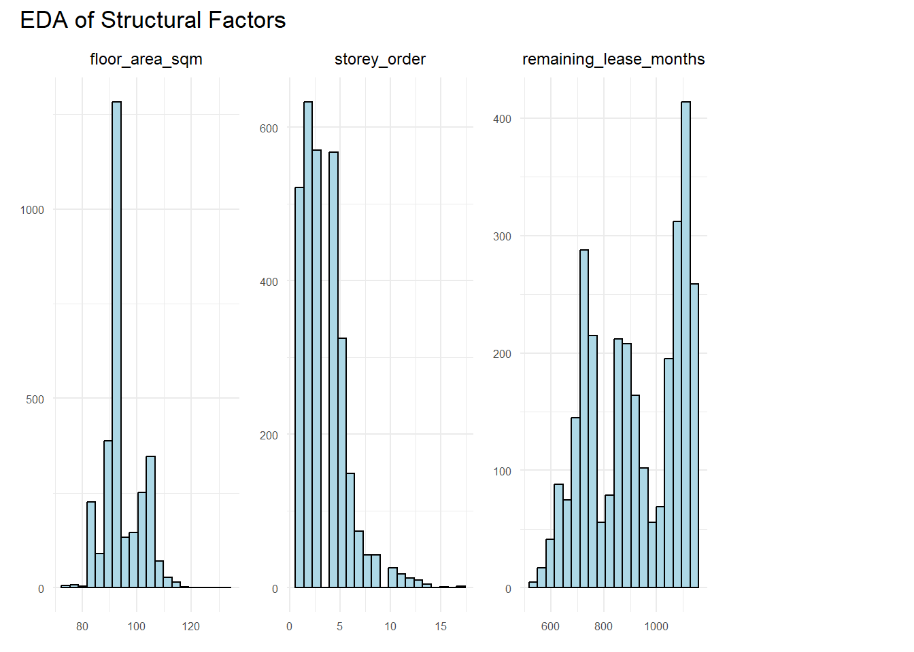
proximity_factors <- c("prox_mrt", "prox_cycling",
"prox_taxi", "prox_studentcare", "prox_gps",
"prox_eldercare", "prox_cbd","prox_CHAS", "prox_hawker",
"prox_hospital", "prox_library", "prox_market",
"prox_parks","prox_pharmacy", "prox_mall", "prox_supermarket"
)
plots <- lapply(proximity_factors, function(v) {
ggplot(HDB_test, aes_string(x = v)) +
geom_histogram(bins = 20, color = "black", fill = "lightblue") +
labs(title = v, x = NULL, y = NULL) +
theme_minimal() +
theme(
plot.title = element_text(size = 9, hjust = 0.5),
axis.text = element_text(size = 6)
)
})
EDA_proximity <- wrap_plots(plots, ncol = 4) +
plot_annotation(title = "EDA of Location & Accessibility Factors")
EDA_proximity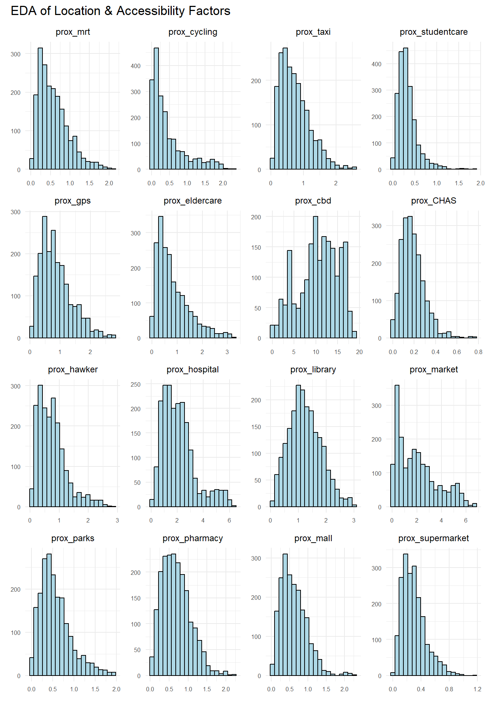
access_factors <- c("bus_within350m", "preschool_within350m",
"kindergarten_within350m", "childcare_within350m",
"prischool_within1km", "nrp_completed")
plots <- lapply(access_factors, function(v) {
ggplot(HDB_test, aes_string(x = v)) +
geom_histogram(bins = 20, color = "black", fill = "lightblue") +
labs(title = v, x = NULL, y = NULL) +
theme_minimal() +
theme(
plot.title = element_text(size = 9, hjust = 0.5),
axis.text = element_text(size = 6)
)
})
EDA_access <- wrap_plots(plots, ncol = 3) +
plot_annotation(title = "EDA of Factors related to Accessibility")
EDA_access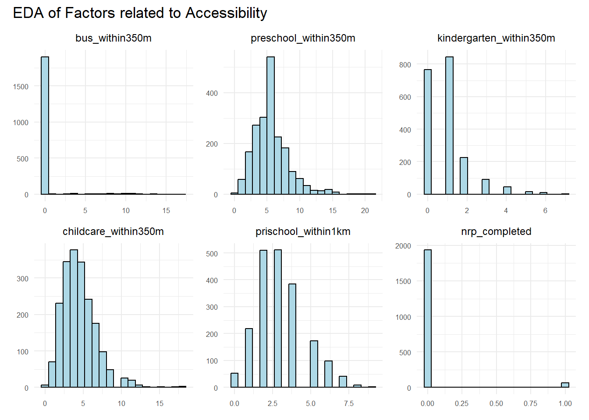
Computing Correlation matrix
HDB_train_nogeo <- HDB_train %>%
st_drop_geometry()
corrplot::corrplot(cor(HDB_train_nogeo[, 2:17]),
diag = FALSE,
order = "AOE",
tl.pos = "td",
tl.cex = 0.5,
method = "number",
type = "upper")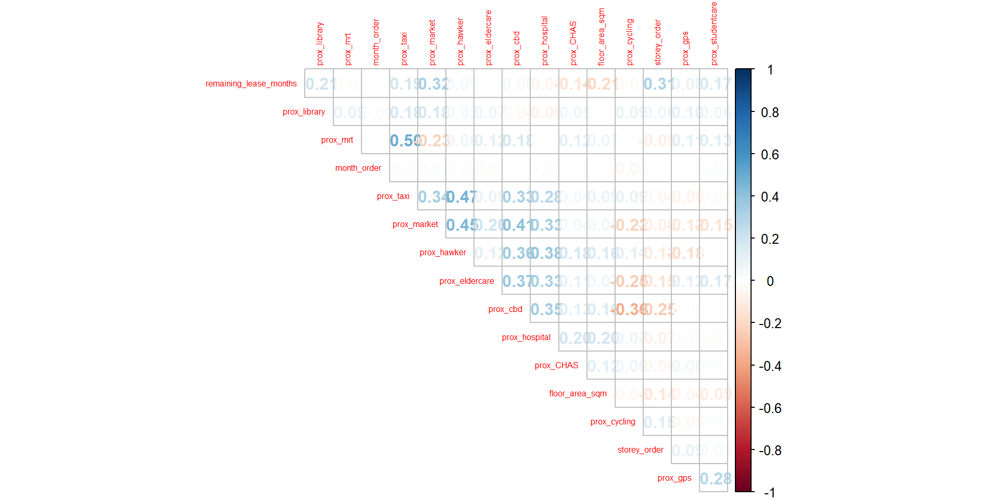
Non Spatial Multiple Linear Regression
price_mlr <- lm(resale_price ~ floor_area_sqm + month_order + storey_order + remaining_lease_months + prox_mrt + prox_cycling + prox_taxi + prox_studentcare + prox_gps + prox_eldercare + prox_cbd + prox_CHAS + prox_hawker + prox_hospital + prox_library + prox_market + prox_parks + prox_pharmacy + prox_mall + prox_supermarket + bus_within350m + preschool_within350m + kindergarten_within350m + childcare_within350m + prischool_within1km + nrp_completed,
data=HDB_train)
summary(price_mlr)
Call:
lm(formula = resale_price ~ floor_area_sqm + month_order + storey_order +
remaining_lease_months + prox_mrt + prox_cycling + prox_taxi +
prox_studentcare + prox_gps + prox_eldercare + prox_cbd +
prox_CHAS + prox_hawker + prox_hospital + prox_library +
prox_market + prox_parks + prox_pharmacy + prox_mall + prox_supermarket +
bus_within350m + preschool_within350m + kindergarten_within350m +
childcare_within350m + prischool_within1km + nrp_completed,
data = HDB_train)
Residuals:
Min 1Q Median 3Q Max
-214087 -38482 -996 34032 282120
Coefficients:
Estimate Std. Error t value Pr(>|t|)
(Intercept) -67262.493 21232.114 -3.168 0.001551 **
floor_area_sqm 4345.736 177.877 24.431 < 2e-16 ***
month_order 3131.815 311.694 10.048 < 2e-16 ***
storey_order 16147.277 560.720 28.797 < 2e-16 ***
remaining_lease_months 576.004 8.536 67.481 < 2e-16 ***
prox_mrt -32410.587 4145.667 -7.818 7.39e-15 ***
prox_cycling -20022.131 2754.053 -7.270 4.57e-13 ***
prox_taxi -55978.296 3651.663 -15.330 < 2e-16 ***
prox_studentcare -40999.651 5823.689 -7.040 2.37e-12 ***
prox_gps 14659.397 2612.277 5.612 2.19e-08 ***
prox_eldercare -11634.905 2132.252 -5.457 5.25e-08 ***
prox_cbd -16281.123 359.758 -45.256 < 2e-16 ***
prox_CHAS -4812.798 11405.841 -0.422 0.673085
prox_hawker 22295.707 2911.301 7.658 2.53e-14 ***
prox_hospital 14798.048 1183.882 12.500 < 2e-16 ***
prox_library 774.178 2306.160 0.336 0.737121
prox_market -26695.136 1234.528 -21.624 < 2e-16 ***
prox_parks -13065.621 3358.471 -3.890 0.000102 ***
prox_pharmacy -8342.101 4007.258 -2.082 0.037451 *
prox_mall -15270.761 3916.082 -3.899 9.85e-05 ***
prox_supermarket -21020.913 6988.215 -3.008 0.002651 **
bus_within350m 7671.761 759.569 10.100 < 2e-16 ***
preschool_within350m 3528.741 3597.271 0.981 0.326697
kindergarten_within350m -1552.890 2753.395 -0.564 0.572803
childcare_within350m -2465.075 3752.926 -0.657 0.511334
prischool_within1km -1679.499 1144.757 -1.467 0.142448
nrp_completed 640.285 6811.767 0.094 0.925118
---
Signif. codes: 0 '***' 0.001 '**' 0.01 '*' 0.05 '.' 0.1 ' ' 1
Residual standard error: 60300 on 2973 degrees of freedom
Multiple R-squared: 0.8567, Adjusted R-squared: 0.8555
F-statistic: 683.8 on 26 and 2973 DF, p-value: < 2.2e-16price_mlr <- lm(resale_price ~ floor_area_sqm + month_order + storey_order + remaining_lease_months + prox_mrt + prox_cycling + prox_taxi + prox_studentcare + prox_gps + prox_eldercare + prox_cbd + prox_hawker + prox_hospital + prox_market + prox_parks + prox_pharmacy + prox_mall + prox_supermarket + bus_within350m,
data = HDB_train)
summary(price_mlr)
Call:
lm(formula = resale_price ~ floor_area_sqm + month_order + storey_order +
remaining_lease_months + prox_mrt + prox_cycling + prox_taxi +
prox_studentcare + prox_gps + prox_eldercare + prox_cbd +
prox_hawker + prox_hospital + prox_market + prox_parks +
prox_pharmacy + prox_mall + prox_supermarket + bus_within350m,
data = HDB_train)
Residuals:
Min 1Q Median 3Q Max
-215965 -38714 -1032 34805 279861
Coefficients:
Estimate Std. Error t value Pr(>|t|)
(Intercept) -72398.865 19465.161 -3.719 0.000203 ***
floor_area_sqm 4381.655 174.862 25.058 < 2e-16 ***
month_order 3136.993 311.284 10.078 < 2e-16 ***
storey_order 16197.955 560.083 28.921 < 2e-16 ***
remaining_lease_months 578.888 8.174 70.819 < 2e-16 ***
prox_mrt -32909.930 4120.548 -7.987 1.96e-15 ***
prox_cycling -19243.038 2675.915 -7.191 8.09e-13 ***
prox_taxi -55384.933 3575.700 -15.489 < 2e-16 ***
prox_studentcare -41585.143 5587.608 -7.442 1.29e-13 ***
prox_gps 15212.609 2423.851 6.276 3.97e-10 ***
prox_eldercare -11140.232 2107.922 -5.285 1.35e-07 ***
prox_cbd -16300.559 352.206 -46.281 < 2e-16 ***
prox_hawker 23193.053 2855.205 8.123 6.59e-16 ***
prox_hospital 15147.321 1097.265 13.805 < 2e-16 ***
prox_market -27365.419 1038.500 -26.351 < 2e-16 ***
prox_parks -13616.151 3295.153 -4.132 3.69e-05 ***
prox_pharmacy -7936.977 3950.289 -2.009 0.044604 *
prox_mall -14879.690 3758.008 -3.959 7.69e-05 ***
prox_supermarket -24324.646 6610.579 -3.680 0.000238 ***
bus_within350m 7705.659 757.935 10.167 < 2e-16 ***
---
Signif. codes: 0 '***' 0.001 '**' 0.01 '*' 0.05 '.' 0.1 ' ' 1
Residual standard error: 60340 on 2980 degrees of freedom
Multiple R-squared: 0.8562, Adjusted R-squared: 0.8553
F-statistic: 934.1 on 19 and 2980 DF, p-value: < 2.2e-16Prediction
mlr_pred <- predict(price_mlr,
newdata=HDB_test)
predicted_mlr_df <- as.data.frame(mlr_pred)
HDB_test_p<- cbind(
HDB_test, mlr_pred) %>%
select(resale_price, mlr_pred)RMSE calculation
mlr_rmse<- rmse(HDB_test_p$resale_price,
HDB_test_p$mlr_pred) %>%
st_drop_geometry()
mlr_rmse[1] 65164.75Geographically Weighted Regression
Compute adaptive bandwidth for train data
bw_adaptive <- bw.gwr(
formula = resale_price ~ floor_area_sqm + month_order + storey_order + remaining_lease_months + prox_mrt + prox_cycling + prox_taxi + prox_studentcare + prox_gps + prox_eldercare + prox_cbd + prox_hawker + prox_hospital + prox_market + prox_parks + prox_pharmacy + prox_mall + prox_supermarket + bus_within350m,
data=HDB_train,
approach="CV",
kernel="gaussian",
adaptive=TRUE,
longlat=FALSE
)
write_rds(bw_adaptive, "data/rds/bw_adaptive.rds")bw_adaptive <- read_rds("data/rds/bw_adaptive.rds")
bw_adaptive[1] 56Calibrate GWR model
gwr_adaptive <- gwr.basic(
formula = resale_price ~ floor_area_sqm + month_order + storey_order + remaining_lease_months + prox_mrt + prox_cycling + prox_taxi + prox_studentcare + prox_gps + prox_eldercare + prox_cbd + prox_hawker + prox_hospital + prox_market + prox_parks + prox_pharmacy + prox_mall + prox_supermarket + bus_within350m,
data=HDB_train,
bw= bw_adaptive,
kernel = 'gaussian',
adaptive=TRUE,
longlat = FALSE)
write_rds(gwr_adaptive, "data/rds/gwr_adaptive.rds")gwr_adaptive <- read_rds("data/rds/gwr_adaptive.rds")
gwr_adaptive ***********************************************************************
* Package GWmodel *
***********************************************************************
Program starts at: 2025-11-14 21:05:00.339617
Call:
gwr.basic(formula = resale_price ~ floor_area_sqm + month_order +
storey_order + remaining_lease_months + prox_mrt + prox_cycling +
prox_taxi + prox_studentcare + prox_gps + prox_eldercare +
prox_cbd + prox_hawker + prox_hospital + prox_market + prox_parks +
prox_pharmacy + prox_mall + prox_supermarket + bus_within350m,
data = HDB_train, bw = bw_adaptive, kernel = "gaussian",
adaptive = TRUE, longlat = FALSE)
Dependent (y) variable: resale_price
Independent variables: floor_area_sqm month_order storey_order remaining_lease_months prox_mrt prox_cycling prox_taxi prox_studentcare prox_gps prox_eldercare prox_cbd prox_hawker prox_hospital prox_market prox_parks prox_pharmacy prox_mall prox_supermarket bus_within350m
Number of data points: 3000
***********************************************************************
* Results of Global Regression *
***********************************************************************
Call:
lm(formula = formula, data = data)
Residuals:
Min 1Q Median 3Q Max
-215965 -38714 -1032 34805 279861
Coefficients:
Estimate Std. Error t value Pr(>|t|)
(Intercept) -72398.865 19465.161 -3.719 0.000203 ***
floor_area_sqm 4381.655 174.862 25.058 < 2e-16 ***
month_order 3136.993 311.284 10.078 < 2e-16 ***
storey_order 16197.955 560.083 28.921 < 2e-16 ***
remaining_lease_months 578.888 8.174 70.819 < 2e-16 ***
prox_mrt -32909.930 4120.548 -7.987 1.96e-15 ***
prox_cycling -19243.038 2675.915 -7.191 8.09e-13 ***
prox_taxi -55384.933 3575.700 -15.489 < 2e-16 ***
prox_studentcare -41585.143 5587.608 -7.442 1.29e-13 ***
prox_gps 15212.609 2423.851 6.276 3.97e-10 ***
prox_eldercare -11140.232 2107.922 -5.285 1.35e-07 ***
prox_cbd -16300.559 352.206 -46.281 < 2e-16 ***
prox_hawker 23193.053 2855.205 8.123 6.59e-16 ***
prox_hospital 15147.321 1097.265 13.805 < 2e-16 ***
prox_market -27365.419 1038.500 -26.351 < 2e-16 ***
prox_parks -13616.151 3295.153 -4.132 3.69e-05 ***
prox_pharmacy -7936.977 3950.289 -2.009 0.044604 *
prox_mall -14879.690 3758.008 -3.959 7.69e-05 ***
prox_supermarket -24324.646 6610.579 -3.680 0.000238 ***
bus_within350m 7705.659 757.935 10.167 < 2e-16 ***
---Significance stars
Signif. codes: 0 '***' 0.001 '**' 0.01 '*' 0.05 '.' 0.1 ' ' 1
Residual standard error: 60340 on 2980 degrees of freedom
Multiple R-squared: 0.8562
Adjusted R-squared: 0.8553
F-statistic: 934.1 on 19 and 2980 DF, p-value: < 2.2e-16
***Extra Diagnostic information
Residual sum of squares: 1.084847e+13
Sigma(hat): 60154.54
AIC: 74581.66
AICc: 74581.97
BIC: 71875.93
***********************************************************************
* Results of Geographically Weighted Regression *
***********************************************************************
*********************Model calibration information*********************
Kernel function: gaussian
Adaptive bandwidth: 56 (number of nearest neighbours)
Regression points: the same locations as observations are used.
Distance metric: Euclidean distance metric is used.
****************Summary of GWR coefficient estimates:******************
Min. 1st Qu. Median 3rd Qu.
Intercept -8910592.78 -384999.54 -123968.39 214765.63
floor_area_sqm -1939.36 2651.23 3160.75 4851.03
month_order 1525.94 2976.03 3548.25 4096.21
storey_order 7497.49 12197.99 14472.33 16131.01
remaining_lease_months 122.45 364.86 507.81 684.03
prox_mrt -1150351.46 -70921.95 -25044.66 7623.13
prox_cycling -163517.91 -43761.74 -25588.76 -1094.83
prox_taxi -1686571.02 -109033.49 -55705.17 -14219.73
prox_studentcare -136866.76 -24965.57 799.04 26670.95
prox_gps -264889.91 -24392.35 -7702.63 7388.45
prox_eldercare -443212.26 -22938.66 2325.21 24185.73
prox_cbd -506080.53 -21393.66 -6847.36 17869.98
prox_hawker -780528.17 -31194.94 -2459.19 33243.94
prox_hospital -273875.80 -12666.19 7645.14 32886.93
prox_market -4246799.09 -68928.54 -20573.41 32775.12
prox_parks -175723.82 -27185.07 -2462.50 21414.05
prox_pharmacy -175650.48 -38856.31 2967.08 52979.45
prox_mall -177810.89 -41226.63 -13261.31 11978.26
prox_supermarket -201912.68 -46170.93 -12503.14 23429.41
bus_within350m -686977.86 3700.34 31265.30 86985.45
Max.
Intercept 3225011.87
floor_area_sqm 10411.34
month_order 6280.77
storey_order 20898.24
remaining_lease_months 860.81
prox_mrt 1231512.20
prox_cycling 222151.55
prox_taxi 951998.51
prox_studentcare 200181.49
prox_gps 453457.88
prox_eldercare 148363.38
prox_cbd 1280216.56
prox_hawker 1194868.52
prox_hospital 3829832.08
prox_market 743341.18
prox_parks 141618.12
prox_pharmacy 371100.45
prox_mall 283585.97
prox_supermarket 182144.60
bus_within350m 1391376.56
************************Diagnostic information*************************
Number of data points: 3000
Effective number of parameters (2trace(S) - trace(S'S)): 517.6537
Effective degrees of freedom (n-2trace(S) + trace(S'S)): 2482.346
AICc (GWR book, Fotheringham, et al. 2002, p. 61, eq 2.33): 71441.49
AIC (GWR book, Fotheringham, et al. 2002,GWR p. 96, eq. 4.22): 70891.78
BIC (GWR book, Fotheringham, et al. 2002,GWR p. 61, eq. 2.34): 70792.79
Residual sum of squares: 2.801196e+12
R-square value: 0.9628793
Adjusted R-square value: 0.9551352
***********************************************************************
Program stops at: 2025-11-14 21:05:06.286245 Prediction
gwr_pred <- gwr.predict(
formula = resale_price ~ floor_area_sqm + month_order + storey_order + remaining_lease_months + prox_mrt + prox_cycling + prox_taxi + prox_studentcare + prox_gps + prox_eldercare + prox_cbd + prox_hawker + prox_hospital + prox_market + prox_parks + prox_pharmacy + prox_mall + prox_supermarket + bus_within350m,
data=HDB_train,
predictdata = HDB_test,
bw=bw_adaptive,
kernel = 'gaussian',
adaptive=TRUE,
longlat = FALSE)
write_rds(gwr_pred,
"data/rds/gwr_pred.rds")gwr_pred <- read_rds('data/rds/gwr_pred.rds')
gwr_pred_df <- as.data.frame(gwr_pred$SDF)
HDB_test_p<- cbind(HDB_test_p, gwr_pred_df$prediction) %>%
rename(gwr_pred = gwr_pred_df.prediction) RMSE Calculation
gwr_rmse <- rmse(HDB_test$resale_price,
HDB_test_p$gwr_pred)
gwr_rmse[1] 37513.26Random Forest
coords_train <- st_coordinates(HDB_train)
coords_test <- st_coordinates(HDB_test)
write_rds(coords_train, 'data/rds/coords_train.rds')
write_rds(coords_test, 'data/rds/coords_test.rds')HDB_train_nogeom <- HDB_train %>%
st_drop_geometry()
HDB_test_nogeom <- HDB_test %>%
st_drop_geometry()set.seed(1234)
rf <- ranger(
formula = resale_price ~ floor_area_sqm + month_order + storey_order + remaining_lease_months + prox_mrt + prox_cycling + prox_taxi + prox_studentcare + prox_gps + prox_eldercare + prox_cbd + prox_CHAS + prox_hawker + prox_hospital + prox_library + prox_market + prox_parks + prox_pharmacy + prox_mall + prox_supermarket + bus_within350m + preschool_within350m + kindergarten_within350m + childcare_within350m + prischool_within1km + nrp_completed,
data=HDB_train_nogeom,
importance='permutation')
write_rds(rf, "data/rds/rf.rds")rf <- read_rds("data/rds/rf.rds")
rfRanger result
Call:
ranger(formula = resale_price ~ floor_area_sqm + month_order + storey_order + remaining_lease_months + prox_mrt + prox_cycling + prox_taxi + prox_studentcare + prox_gps + prox_eldercare + prox_cbd + prox_CHAS + prox_hawker + prox_hospital + prox_library + prox_market + prox_parks + prox_pharmacy + prox_mall + prox_supermarket + bus_within350m + preschool_within350m + kindergarten_within350m + childcare_within350m + prischool_within1km + nrp_completed, data = HDB_train_nogeom, importance = "permutation")
Type: Regression
Number of trees: 500
Sample size: 3000
Number of independent variables: 26
Mtry: 5
Target node size: 5
Variable importance mode: permutation
Splitrule: variance
OOB prediction error (MSE): 1824349925
R squared (OOB): 0.9274967 Variable Importance Analysis
rf_importance_scores <- data.frame(
Feature = names(rf$variable.importance),
Importance = rf$variable.importance
) %>%
arrange(desc(Importance)) %>%
mutate(Feature = factor(Feature, levels = Feature))ggplot(rf_importance_scores, aes(x = Importance, y = Feature)) +
geom_col(fill = "steelblue") +
labs(
title = "Permutation Variable Importance from RF",
x = "Feature",
y = "Importance Score"
) +
theme_minimal() +
theme(
plot.title = element_text(hjust = 0.5, face = "bold"),
axis.text.y = element_text(size = 10)
)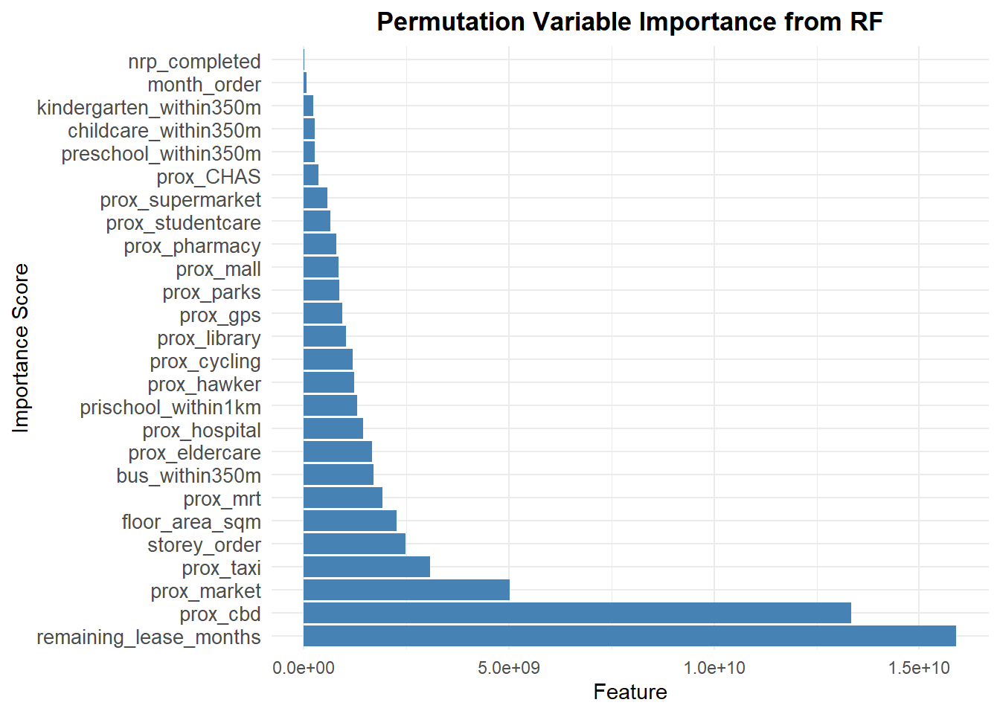
datatable(rf_importance_scores, rownames = FALSE)%>%
formatRound(columns = 'Importance', digits = 2)Based on the above observations, we will only pick the top 15 variables for use in our random forest model and the later geographically weighted random forest model.
Calibrated RF model
set.seed(1234)
rf_c <- ranger(
formula = resale_price ~ floor_area_sqm + storey_order + remaining_lease_months + prox_mrt + prox_cycling + prox_taxi + prox_gps + prox_eldercare + prox_cbd + prox_hawker + prox_hospital + prox_library + prox_market + bus_within350m + prischool_within1km,
data=HDB_train_nogeom,
importance='permutation')
write_rds(rf_c, "data/rds/rf_c.rds")rf_c <- read_rds("data/rds/rf_c.rds")
rf_cRanger result
Call:
ranger(formula = resale_price ~ floor_area_sqm + storey_order + remaining_lease_months + prox_mrt + prox_cycling + prox_taxi + prox_gps + prox_eldercare + prox_cbd + prox_hawker + prox_hospital + prox_library + prox_market + bus_within350m + prischool_within1km, data = HDB_train_nogeom, importance = "permutation")
Type: Regression
Number of trees: 500
Sample size: 3000
Number of independent variables: 15
Mtry: 3
Target node size: 5
Variable importance mode: permutation
Splitrule: variance
OOB prediction error (MSE): 1746896604
R squared (OOB): 0.9305749 Predictions
rf_pred <- predict(rf_c, data=HDB_test_nogeom)
rf_pred_df <- as.data.frame(rf_pred)
write_rds(rf_pred_df, "data/rds/rf_pred_df")rf_pred_df<- read_rds("data/rds/rf_pred_df")
HDB_test_p<- cbind(HDB_test_p, rf_pred_df$prediction) %>%
rename(rf_pred = rf_pred_df.prediction) Calculate RMSE
rf_rmse <- rmse(HDB_test_p$resale_price,
HDB_test_p$rf_pred)
rf_rmse[1] 48978.26Geographically Weighted Random Forest Model
Compute adaptive bandwidth
grf_bw <- grf.bw(
formula = resale_price ~ floor_area_sqm + storey_order + remaining_lease_months + prox_mrt + prox_cycling + prox_taxi + prox_gps + prox_eldercare + prox_cbd + prox_hawker + prox_hospital + prox_library + prox_market + bus_within350m + prischool_within1km,
dataset=HDB_train_nogeom,
coords=coords_train,
bw.min = 50,
bw.max = 501 ,
step = 50,
kernel='adaptive' )
write_rds(grf_bw, 'data/rds/grf_bw.rds')grf_bw <- read_rds('data/rds/grf_bw.rds')
grf_bw$tested.bandwidths
Bandwidth Local Mixed Low.Local
1 50 0.9078652 0.9351535 0.9403580
2 100 0.9237259 0.9398800 0.9419893
3 150 0.9272196 0.9398933 0.9411627
4 200 0.9335135 0.9424405 0.9425063
5 250 0.9336472 0.9421558 0.9423948
6 300 0.9344766 0.9416429 0.9415779
7 350 0.9366635 0.9428110 0.9425467
8 400 0.9356482 0.9413442 0.9409837
9 450 0.9355996 0.9418340 0.9418319
10 500 0.9366152 0.9419675 0.9414918
$Best.BW
[1] 350Create geographically weighted random forest model
set.seed(1234)
coords_train <- read_rds('data/rds/coords_train.rds')
gwRF_adaptive <- grf(
formula = resale_price ~ floor_area_sqm + storey_order + remaining_lease_months + prox_mrt + prox_cycling + prox_taxi + prox_gps + prox_eldercare + prox_cbd + prox_hawker + prox_hospital + prox_library + prox_market + bus_within350m + prischool_within1km,
dframe=HDB_train_nogeom,
bw=350,
kernel="adaptive",
coords=coords_train)
write_rds(gwRF_adaptive, "data/rds/gwRF_adaptive.rds")gwRF_adaptive <- read_rds("data/rds/gwRF_adaptive.rds")
gwRF_adaptivePredictions
coords_test <- read_rds('data/rds/coords_test.rds')
HDB_test_nogeom <- cbind(
HDB_test, coords_test) %>%
st_drop_geometry()gwRF_pred <- predict.grf(gwRF_adaptive,
HDB_test_nogeom,
x.var.name="X",
y.var.name="Y",
local.w=1,
global.w=0)
gwRF_pred <- write_rds(gwRF_pred, "data/rds/gwRF_pred.rds")gwrf_pred <- read_rds("data/rds/GRF_pred.rds")
gwrf_pred <- as.data.frame(gwrf_pred)
HDB_test_p <- cbind(HDB_test_p, gwrf_pred) Calculation of RMSE
gwrf_rmse <- rmse(HDB_test_p$resale_price,
HDB_test_p$gwrf_pred)
gwrf_rmse[1] 43331.06Evaluation of models
In this section, we will evaluate the performance of the 4 models used to predict prices of 4-room HDB flats from July to September 2025.
The following code chunk creates a dataframe
rmse_results <- data.frame(
Model = c("Multiple Linear Regression",
"Geographically Weighted Regression",
"Random Forest",
"Geographically Weighted Random Forest"),
RMSE = c(mlr_rmse,
gwr_rmse,
rf_rmse,
gwrf_rmse)
)
datatable(rmse_results)%>%
formatRound(columns = 'RMSE', digits = 2)Visualising Residuals Distribution
residuals<- HDB_test_p %>%
mutate(mlr=resale_price-mlr_pred,
gwr=resale_price-gwr_pred,
rf=resale_price-rf_pred,
gwrf=resale_price-gwrf_pred)residuals_long <- residuals %>%
pivot_longer(
cols = c(mlr, gwr, rf, gwrf),
names_to = "Model",
values_to = "Residuals"
) %>%
mutate(
Model = factor(Model, levels = c("mlr", "gwr", "rf", "gwrf"))
)
violin_plot <- ggplot(residuals_long, aes(x = Model, y = Residuals, fill = Model)) +
geom_violin(
trim = TRUE,
draw_quantiles = 0.5,
alpha = 0.7
) +
geom_hline(yintercept = 0, linetype = "dashed", color = "red", linewidth = 0.5) +
coord_flip() +
labs(
title = "Comparison of Residual Distributions",
subtitle = "",
x = "Prediction Model",
y = "Residual Value (Actual Price - Predicted Price)",
fill = "Model"
) +
# Apply a clean theme
theme_minimal() +
theme(legend.position = "none") # Hide the redundant legendWarning: The `draw_quantiles` argument of `geom_violin()` is deprecated as of ggplot2
4.0.0.
ℹ Please use the `quantiles.linetype` argument instead.# Display the plot
print(violin_plot)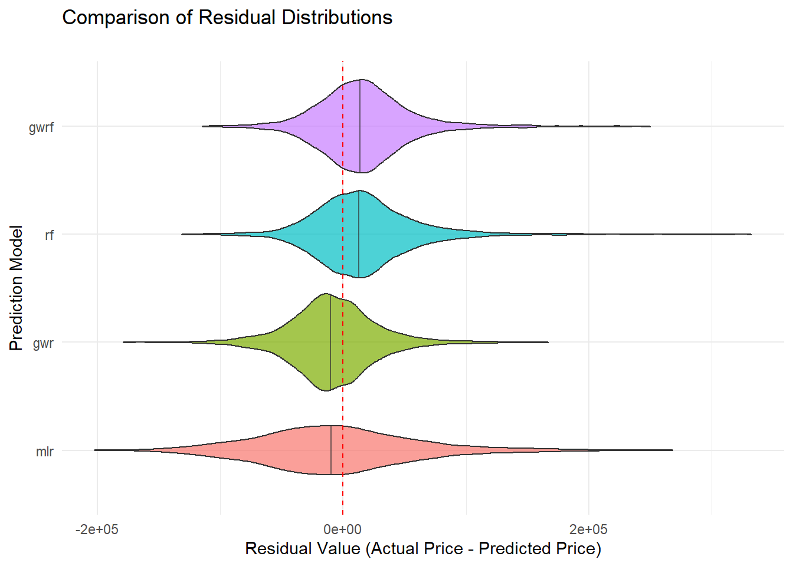
Spatial distribution of Residuals
residuals_region <- st_join(
x = residuals_long,
y = mpsz["REGION_N"],
join = st_within,
left = TRUE
)get_residual_map <- function(model){
sf <- residuals_region %>%
filter(Model==model)
map <- tm_shape(mpsz) +
tm_polygons(col_alpha = 0.3)+
tm_facets(by = "REGION_N",
nrow = 2,
ncols = 3,
free.coords=TRUE,
drop.units=TRUE) +
tm_shape(sf, group = "REGION_N")+
tm_dots(fill='Residuals',
fill.scale = tm_scale_intervals(
style = "fixed",
breaks = c(-300000,-200000,-100000,0,100000,200000,300000,400000),
values = "-tableau.red_blue_diverging"))+
tm_facets(by = "REGION_N",
nrow = 2,
ncols = 3,
free.coords=TRUE,
drop.units=TRUE)
return(map)
} get_residual_map('mlr')[scale] tm_dots:() the data variable assigned to 'fill' contains positive and negative values, so midpoint is set to 0. Set 'midpoint = NA' in 'fill.scale = tm_scale_intervals(<HERE>)' to use all visual values (e.g. colors)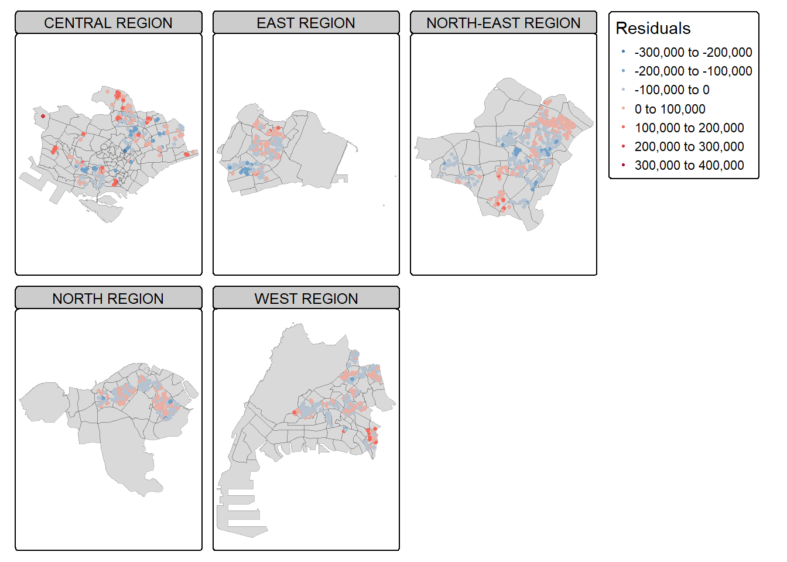
get_residual_map('gwr')[scale] tm_dots:() the data variable assigned to 'fill' contains positive and negative values, so midpoint is set to 0. Set 'midpoint = NA' in 'fill.scale = tm_scale_intervals(<HERE>)' to use all visual values (e.g. colors)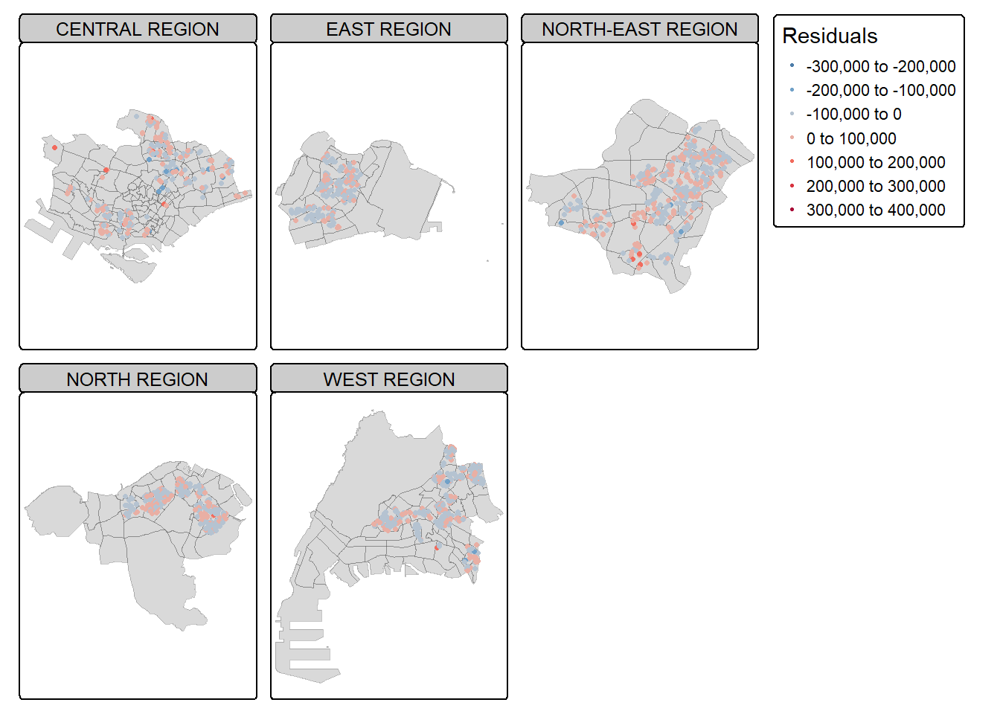
get_residual_map('rf')[scale] tm_dots:() the data variable assigned to 'fill' contains positive and negative values, so midpoint is set to 0. Set 'midpoint = NA' in 'fill.scale = tm_scale_intervals(<HERE>)' to use all visual values (e.g. colors)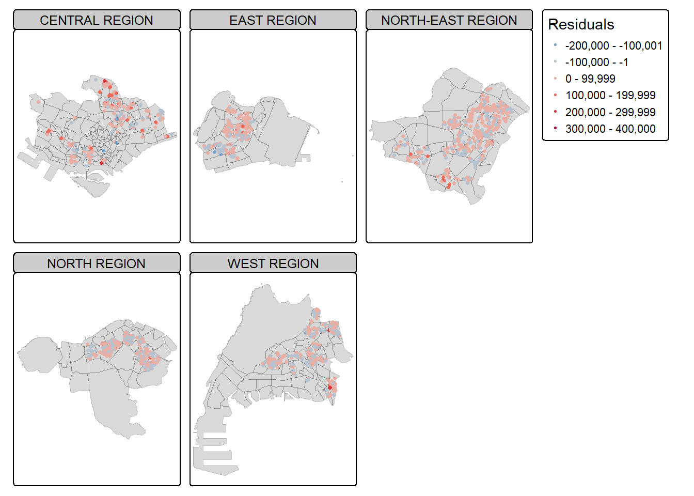
get_residual_map('gwrf')[scale] tm_dots:() the data variable assigned to 'fill' contains positive and negative values, so midpoint is set to 0. Set 'midpoint = NA' in 'fill.scale = tm_scale_intervals(<HERE>)' to use all visual values (e.g. colors)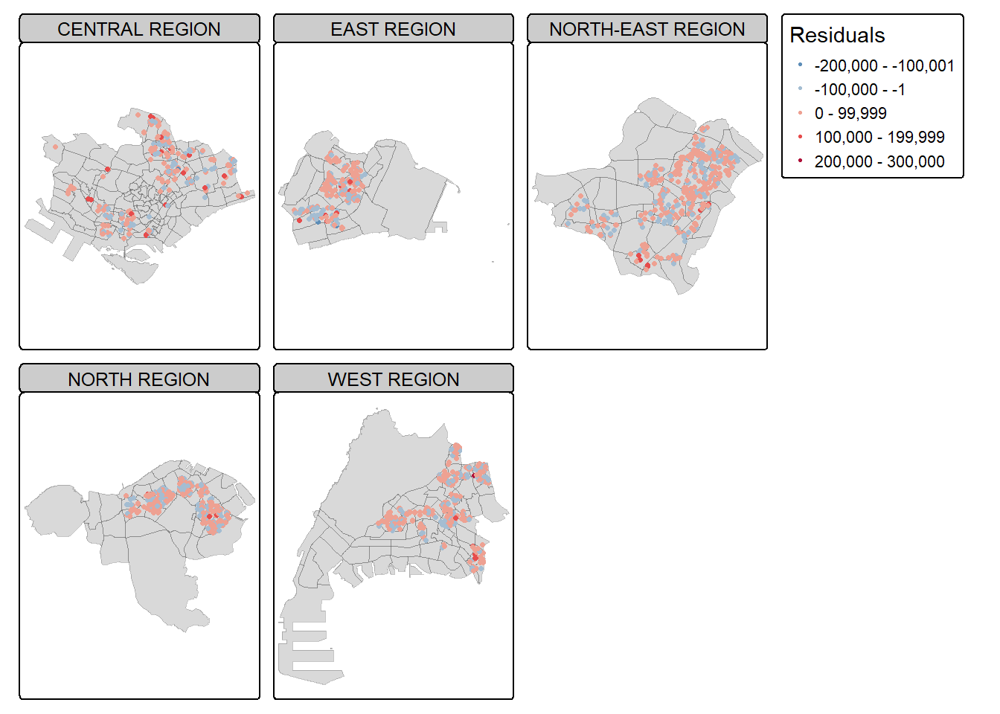
Conclusion
Further Work
References
- https://www.kaggle.com/datasets/muhdirshath/hospitals-in-singapore/data
- https://www.kaggle.com/datasets/sunnysharma432/singapore-malls-pois/data
- https://www-jstor-org.libproxy.smu.edu.sg/stable/pdf/45389328
- https://personal.ntu.edu.sg/qfeng/BianChenFengLi20200804paper.pdf
- https://blogs.ubc.ca/zhuanlim/files/2022/07/Lim_Zhuan_A0224991X.pdf How proximity tools calculate distance—ArcGIS Pro | Documentation. (2025). Arcgis.com. https://pro.arcgis.com/en/pro-app/3.3/tool-reference/analysis/how-near-analysis-works.htm